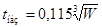
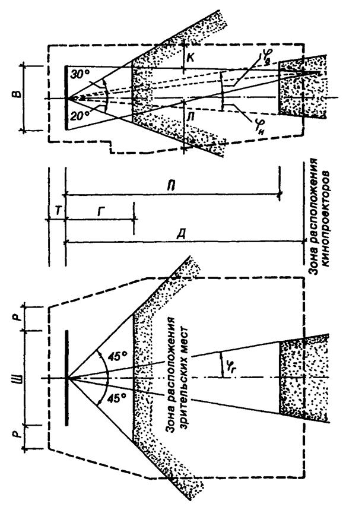

СТРОИТЕЛЬНЫЕ НОРМЫ И ПРАВИЛА
ОБЩЕСТВЕННЫЕ
ЗДАНИЯ
И СООРУЖЕНИЯ
СНиП 2.08.02-89*
Москва 2006
РАЗРАБОТАНЫ Научно-архитектурным центром общественных и производственных зданий и сооружений Госкомархитектуры (Ю.А. Шаронов, В.И. Подольский), ЦНИИЭП учебных зданий Госкомархитектуры (канд. архит. A.M. Гарнец, канд. техн. Наук (3.И. Эстров) - руководители темы; д-р архит. В.И. Степанов; кандидаты архит. Г.Н. Цытович, Е.Б. Дворкина, С.Ф. Наумов, Н.Н. Щетинина; канд. техн. наук П.Е. Герке; В.С. Вольман), ЦНИИЭП реконструкции городов Госкомархитектуры (канд. экон. наук Е.Д. Аграновский, канд. архит. Г.З. Поташникова, А.Б. Варшавер, Н.А. Карпова, Н.Г. Константинова, Т.С. Максимова), ЦНИИЭП курортно-туристских зданий и комплексов Госкомархитектуры (кандидаты архит. В.В. Гусев, Е.М. Либерман, М.И. Магидина; Т.В. Исаченко, Н.С. Колбаева), ЦНИИЭП им. Б.С. Мезенцева Госкомархитектуры (д-р техн. наук В.И. Травуш; кандидаты архит Г.А. Мурадов, В.В. Лазарев, Э.И. Окунева; Д.А. Гальперн, А.П. Голубинский, И.С. Швейцер), ЦНИИЭПграждансельстроем Госкомархитектуры (д-р архит. С.Б. Моисеева; канд. архит. М.Ю. Лимонад), ЦНИИЭП инженерного оборудования Госкомархитектуры (кандидаты техн. наук Л.М. Зусманович, Г.В. Каменская, М.Д. Тернопольский; В.С. Григорьев, Л.И. Вайсман, Т.Е. Горовая, Н.Г. Григорьев, О.Г. Лоодеус, Ю.М. Соснер), ГипроНИИ АН СССР (канд. архит. Д.А. Метаньев, Ю.И. Лямин, М.А. Фельдман), ГипроНИИздравом Минздрава СССР (канд. архит. А.П. Моисеенко; канд. мед. наук А.И. Арбаков; В.А. Мостовой, В.А Турулов, М.С. Добровольская) с участием Гипровуза Гособразования СССР, Гипротеатра Министерства культуры СССР, НПО «Лифтмаш», МИСИ им В.В. Куйбышева, ВНИИПО МВД СССР, ВНИИ гигиены детей и подростков и ВНИИ общей и коммунальной гигиены им. Сысина Минздрава СССР, НИИ гигиены им. Ф.Ф. Эрисмана Минздрава РСФСР, Аэропроекта МГА СССР.
ВНЕСЕНЫ Госкомархитектурой.
ПОДГОТОВЛЕНЫ К УТВЕРЖДЕНИЮ Госкомархитектурой (кандидаты техн. наук В.И. Ванюхин, И.М. Архаров).
СНиП 2.08.02-89* является переизданием СНиП 2.08.02-89 с изменениями № 1, 2, утвержденными постановлениями Госстроя СССР от 28 июня 1991 г № 26, от 30 апреля 1993 г. № 18 - 12, с изменениями № 3 и 4, утвержденными постановлениями Госстроя России от 26 января 1999 г. № 4, от 12 февраля 2001 г. № 10, а также с изменением № 5, утвержденным постановлением Госстроя России от 23 июня 2003 г. № 98.
Пункты и таблицы, в которые внесены изменения, отмечены в настоящих строительных нормах и правилах звездочкой.
|
Государственный |
Строительные нормы и правила |
СНиП 2.08.02-89* |
|
Общественные здания и сооружения |
Взамен СНиП 2.08.02-85 |
Настоящие нормы и правила распространяются на проектирование общественных зданий (высотой до 16 этажей включ.) и сооружений, а также помещений общественного назначения, встроенных в жилые здания. При проектировании помещений общественного назначения, встроенных в жилые здания и встроенно-пристроенных к ним, следует дополнительно руководствоваться СНиП 31-01-2003.
Размещение в общественных зданиях и сооружениях помещений иного назначения допускается при условии соблюдения экологических, санитарно-эпидемиологических и противопожарных требований, соответствующих общественным зданиям.
Перечень основных групп зданий и помещений общественного назначения, на которые распространяется данный СНиП, приведен в обязательном приложении 1*.
Определение терминов приведено в обязательном приложении 2*.
1.1*. Правила подсчета общей, полезной и расчетной площади, строительного объема, площади застройки и этажности зданий приведены в обязательном приложении 3*.
1.2*. Уменьшение от норм площадей, установленных для отдельных помещений или групп помещений, не должно превышать 5 %; для помещений, встроенных в жилые дома, - 15 %.
1.3*. При проектировании зданий, групп помещений или отдельных помещений общественного назначения, предназначенных для непосредственного обслуживания населения и доступных в соответствии с заданием на проектирование для инвалидов и других маломобильных групп посетителей (зрителей, покупателей, учащихся и т.д.), следует руководствоваться требованиями СНиП 35-01-2001 и РДС 35-201-99.
1.4*. Высоту помещений от пола до потолка общественных зданий и жилых помещений санаториев следует принимать не менее 3 м, а жилых помещений в других общественных зданиях - в соответствии со СНиП 31-01-2003. Высоту основных помещений бань и банно-оздоровительных комплексов на 100 и более мест следует принимать не менее 3,3 м, а производственных помещений прачечной-химчистки - не менее 3,6 м.
Примечания: 1. В отдельных помещениях вспомогательного назначения и коридорах в зависимости от объемно-планировочного решения зданий и технологических требований допускается соответствующее уменьшение высоты. При этом высота должна быть не менее 1,9 м.
2. Высоту помещений в общественных зданиях общей вместимостью до 40 чел., а предприятий розничной торговли торговой площадью до 250 м2 допускается принимать по высоте этажа жилого здания, куда они встраиваются.
1.5*. Высота технических этажей определяется в каждом отдельном случае в зависимости от вида размещаемых в них инженерного оборудования и инженерных сетей, условий их эксплуатации. Высота в местах прохода обслуживающего персонала до низа выступающих конструкций должна быть не менее 1,8 м.
При проектировании технического этажа (технического подполья), предназначенного для размещения только инженерных сетей с трубопроводами и изоляцией трубопроводов из негорючих материалов, высота от пола до потолка может быть не менее 1,6 м.
1.6. Сквозные проезды в зданиях следует принимать шириной (в свету) не менее 3,5 м, высотой не менее 4,25 м.
Это требование не распространяется на сквозные проемы в зданиях и сооружениях на уровне земли или первого этажа (пешеходные проходы и другие, не предназначенные для проезда пожарных машин).
1.7. Отметка пола помещений у входа в здание должна быть выше отметки тротуара перед входом не менее чем на 0,15 м.
Допускается принимать отметку пола у входа в здание менее 0,15 м (в том числе и заглубление ниже отметки тротуара) при условии предохранения помещений от попадания осадков.
1.8. Перечень помещений общественных зданий, которые допускается располагать в цокольных и подвальных этажах, приведен в обязательном приложении 4*. Проектирование общественных сооружений, размещаемых полностью или преимущественно в подземном пространстве, производится по специальным заданиям на проектирование.
1.9. В отдельных общественных зданиях, определяемых по схеме размещения сооружений гражданской обороны, следует проектировать помещения двойного назначения в соответствии со СНиП II-11-77*.
1.10. Размещение мастерских, кладовых и других помещений, предназначенных по заданию на проектирование для хранения или переработки горючих материалов, под зрительными и актовыми залами, а также в подвальных и цокольных этажах зданий детских дошкольных учреждений, школ, спальных корпусов школ-интернатов и интернатов для школ, стационаров лечебных учреждений и спальных корпусов санаториев не допускается.
Размещение лыжехранилищ непосредственно под спальными помещениями не допускается.
|
Внесены |
Утверждены постановлением |
Срок введения в действие |
1.11*. Техническое подполье, в котором проложены инженерные сети, должно иметь выходы наружу (через люки размером не менее 0,6×0,6 м или двери).
1.12. В каждом отсеке подвальных или цокольных этажей (заглубленных более чем на 0,5 м) должно быть не менее двух люков или окон шириной 0,9 м и высотой 1,2 м, кроме случаев, оговоренных в СНиП II-11-77*. Площадь такого отсека должна быть не более 700 м2.
1.13. Вентиляционные камеры, насосные, машинные отделения холодильных установок, тепловые пункты и другие помещения с оборудованием, являющимся источником шума и вибраций, не следует располагать смежно, над и под зрительными и репетиционными залами, сценами, звукоаппаратными, читальными залами, палатами, комнатами врачей, операционными, помещениями с пребыванием детей в детских учреждениях, учебными помещениями, рабочими помещениями и кабинетами с постоянным пребыванием людей, жилыми помещениями, размещенными в общественных зданиях.
1.14*. Площадь этажа между противопожарными стенами 1-го типа в зависимости от степени огнестойкости и этажности зданий должна быть не более указанной в табл. 1, зданий предприятий бытового обслуживания - в табл. 2*, магазинов - в табл. 3.
|
Степень огнестойкости здания |
Наибольшее число этажей |
Площадь, м2, этажа между противопожарными стенами в здании |
||||
|
одноэтажном |
2-этажном |
3-5-этажном |
6-9-этажном |
10-16-этажном |
||
|
I |
16 |
6000 |
5000 |
5000 |
5000 |
2500 |
|
II |
16 |
6000 |
4000 |
4000 |
4000 |
2200 |
|
III |
5 |
3000 |
2000 |
2000 |
- |
- |
|
IIIа и IIIб |
1* |
2500 |
- |
- |
- |
- |
|
IV |
2 |
2000 |
1400 |
- |
- |
- |
|
IVa |
1 |
800 |
- |
- |
- |
- |
|
V |
2 |
1200 |
800 |
- |
- |
- |
|
______________ * Для кинотеатров и клубов - см. табл. 7, крытых спортивных сооружений - п. 1.42, школ - табл. 6. Примечания: 1 В зданиях I и II степеней огнестойкости при наличии автоматического пожаротушения площадь этажа между противопожарными стенами может быть увеличена не более чем вдвое. 2. Деревянные стены с внутренней стороны, перегородки и потолки зданий V степени огнестойкости детских дошкольных учреждений, школ, школ-интернатов, лечебных и амбулаторно-поликлинических учреждений, детских оздоровительных лагерей и клубов (кроме одноэтажных зданий клубов с рублеными и брусчатыми стенами) должны быть оштукатурены или покрыты огнезащитными красками или лаками. 3. Площадь этажа между противопожарными стенами одноэтажных зданий с двухэтажной частью, занимающей менее 15 % площади застройки здания, следует принимать как для одноэтажных зданий. 4. В зданиях вокзалов вместо противопожарных стен допускается устройство водяных дренчерных завес в две нити, расположенных на расстоянии 0,5 м и обеспечивающих интенсивность орошения не менее 1 л/с на 1 м длины завес. Время работы завес не менее 1 ч. 5. В зданиях аэровокзалов I степени огнестойкости площадь этажа между противопожарными стенами может быть увеличена до 10 000 м2, если в подвальных (цокольных) этажах не располагаются склады, кладовые и другие помещения с наличием горючих материалов (кроме камер хранения багажа и гардеробных персонала). При этом сообщение уборных, расположенных в подвальном и цокольном этажах, с первым этажом может осуществляться по открытым лестницам, а камер хранения и гардеробных - по отдельным лестницам в закрытых лестничных клетках. Камеры хранения (кроме оборудованных автоматическими ячейками) и гардеробные необходимо отделять от остальных помещений подвала противопожарными перегородками 1-го типа и оборудовать установками автоматического пожаротушения, а командно-диспетчерские пункты - противопожарными перегородками 6. В зданиях аэровокзалов площадь этажа между противопожарными стенами не ограничивают при условии оборудования установками автоматического пожаротушения. 7. Степень огнестойкости пристроенных к зданию навесов, террас, галерей, а также отделенных противопожарными стенами служебных и других зданий и сооружений допускается принимать на одну степень огнестойкости ниже, чем степень огнестойкости здания. 8. В спортивных залах, залах крытых катков и залах ванн бассейнов (с местами для зрителей и без них), а также в залах для подготовительных занятий бассейнов и огневых зонах крытых тиров (в том числе размещаемых под трибунами или встроенных в другие общественные здания) при превышении их площади по отношению к установленной в табл. 1 противопожарные стены следует предусматривать между зальными (в тирах - огневой зоной со стрелковой галереей) и другими помещениями. В помещениях вестибюлей и фойе при превышении их площади по отношению к установленной в табл. 1 вместо противопожарных стен можно предусматривать светопрозрачные противопожарные перегородки 2-го типа. |
||||||
|
Степень огнестойкости здания |
Наибольшее число этажей |
Площадь, м2, этажа между противопожарными стенами в здании |
|
I, II |
6 |
2500 |
|
III |
2 |
1000 |
|
IIIа, IIIб |
1 |
1000 |
|
IV, IVa и V |
1 |
500 |
|
Примечание. В зданиях I и II степеней огнестойкости при наличии автоматического пожаротушения площадь этажа между противопожарными стенами может быть увеличена не более чем вдвое. |
||
|
Степень огнестойкости здания |
Наибольшее число этажей |
Площадь, м2, этажа между противопожарными стенами в здании |
||
|
одноэтажные |
2-этажные |
3-5-этажные |
||
|
I, II |
5 |
3500 |
3000 |
2500 |
|
III |
2 |
2000 |
1000 |
- |
|
IIIa, IIIб |
1 |
1000 |
- |
- |
|
IV, IVa и V |
1 |
500 |
- |
- |
|
Примечания: 1. В одноэтажных зданиях продовольственных магазинов и магазинов типа «Универсам» IIIa и IIIб степеней огнестойкости площадь этажа между противопожарными стенами 1-го типа может быть увеличена вдвое при условии отделения торгового зала от других помещений магазина противопожарной стенкой 2-го типа. 2. В зданиях I и II степеней огнестойкости при наличии автоматического пожаротушения площадь этажа между противопожарными стенами может быть увеличена не более чем вдвое. 3. При размещении кладовых, служебных, бытовых и технических помещений на верхних этажах зданий магазинов I и II степеней огнестойкости высота зданий может быть увеличена на один этаж. |
||||
1.14 а*. В зданиях I, II, III степеней огнестойкости для мансардного этажа допускается принимать предел огнестойкости несущих строительных конструкций 0,75 ч с нулевым пределом распространения огня при отделении его от нижних этажей противопожарным перекрытием 2-го типа. В этом случае мансардный этаж, независимо от этажности здания, должен разделяться противопожарными стенами 2-го типа. Площадь этажа между этими противопожарными стенами должна составлять: для зданий I и II степеней огнестойкости не более 2000 м2, для зданий III степени огнестойкости - не более 1400 м2. При наличии на мансардном этаже установок автоматического пожаротушения эта площадь может быть увеличена не более чем в 1,2 раза.
В мансардах зданий до 10 этажей включительно допускается применение деревянных конструкций с огнезащитой, обеспечивающей установленные выше пределы огнестойкости и распространения огня.
1.15*. Ограждающие конструкции переходов между зданиями (корпусами) должны иметь пределы огнестойкости, соответствующие основному зданию (корпусу). Пешеходные и коммуникационные тоннели следует проектировать из негорючих материалов. Стены зданий в местах примыкания к ним переходов и тоннелей следует предусматривать из негорючих материалов с пределом огнестойкости 2 ч. Двери в проемах этих стен, ведущие в переходы и тоннели, должны быть противопожарными 2-го типа.
1.16. Аудитории, актовые и конференц-залы, залы собраний и зальные помещения спортивных сооружений необходимо размещать по этажам в соответствии с табл. 4.
|
Степень огнестойкости здания |
Число мест в аудитории или зале |
Предельный этаж размещения |
|
I, II |
До 300 |
16 |
|
Св. 300 до 600 |
5 |
|
|
Св. 600 |
3 |
|
|
III |
До 300 |
3 |
|
Св. 300 до 600 |
2 |
|
|
IIIa, IV, V |
До 300 |
1 |
|
IIIб |
До 100 |
1 |
|
IVa |
До 100 |
1 |
|
Примечания: 1. При определении предельного этажа размещения аудиторий или залов, имеющих уклон пола, отметку пола следует принимать у первого ряда мест. 2. Актовые залы - лекционные аудитории в зданиях школ и школ-интернатов III степени огнестойкости следует размещать не выше второго этажа. Перекрытие под актовым залом - лекционной аудиторией должно быть противопожарным 2-го типа. |
||
1.17. Наибольшее число мест и наибольшую этажность в зависимости от степени огнестойкости зданий детских дошкольных учреждений общего типа следует принимать по табл. 5.
|
Степень огнестойкости здания |
Этажность |
Число мест в здании |
|
IV, V, IIIa |
1 |
До 50 |
|
IIIб |
1 |
До 100 |
|
III |
2 |
До 150 |
|
I, II |
2,3 (см. п. 1.18*) |
До 350 |
1.18*. Трехэтажные здания детских дошкольных учреждений должны быть не ниже II степени огнестойкости независимо от числа мест в здании. Их допускается проектировать в городах и других поселениях (кроме сейсмических районов), обслуживаемых военизированной пожарной охраной МЧС России при соблюдении следующих требований:
на третьем этаже можно располагать только помещения старших групп (в IA, IБ и IГ подрайонах и IV климатическом районе по согласованию с местными органами Государственного санитарного надзора), залы для музыкальных и физкультурных занятий, а также служебно-бытовые помещения и прогулочные веранды, из каждой групповой ячейки на втором и третьем этажах должны быть запроектированы рассредоточенные выходы на две лестничные клетки. Коридоры, соединяющие лестничные клетки, необходимо разделять противопожарными дверями 3-го типа из условия обеспечения выходов из каждой групповой ячейки в разные отсеки коридора. Входные двери групповых ячеек должны быть выполнены с уплотнением в притворах.
1.19. Здания специализированных дошкольных учреждений независимо от числа мест следует проектировать не ниже II степени огнестойкости и высотой не более двух этажей.
1.20*. При расположении в одном здании дошкольного учреждения и начальной или малокомплектной школы (или жилых помещений для персонала) помещения дошкольного учреждения должны иметь обособленные выходы наружу, а пути эвакуации из помещений другого назначения не должны проходить через помещения дошкольного учреждения.
В зданиях общей вместимостью более 50 чел. (а также до 50 чел., но с детским дошкольным учреждением более 25 мест) помещения дошкольного учреждения следует отделять от помещений школ и жилых помещений противопожарной перегородкой 1-го типа и перекрытием 3-го типа.
Перегородки и перекрытия, отделяющие жилые помещения персонала от детского дошкольного учреждения или школы, должны иметь предел огнестойкости не менее 0,75 ч, при пределе распространения огня для зданий V степени огнестойкости - до 40 см.
Степень огнестойкости здания следует принимать по общему числу мест в здании, а при устройстве противопожарной стены между детским дошкольным учреждением и школой - по числу мест в каждой части здания.
1.21. Пристроенные прогулочные веранды детских дошкольных учреждений более 50 мест следует проектировать той же степени огнестойкости, что и основные здания.
1.22. В качестве утеплителя стен зданий детских дошкольных учреждений следует применять неорганические материалы. При применении железобетонных стеновых панелей с полимерным (органическим) утеплителем он должен быть полностью замоноличен в конструкции панели при толщине защитного слоя бетона со всех сторон не менее 50 мм.
1.23*. Наибольшее число мест и наибольшую этажность в зависимости от степени огнестойкости зданий общеобразовательных учреждений (далее - школ и школ-интернатов) следует принимать по табл. 6*.
Строительство четырехэтажных зданий школ и учебных корпусов школ-интернатов допускается в крупных и крупнейших городах, кроме расположенных в сейсмических районах.
Возможность надстройки зданий общеобразовательных учреждений мансардным этажом при реконструкции в пределах нормируемой этажности и перечень размещаемых там помещений согласовываются с местными органами пожарного надзора. При этом на мансардном этаже не допускается размещать спальные помещения.
|
Степень огнестойкости здания |
Этажность |
Число учащихся или мест в здании |
|
Здания школ и учебные корпуса школ-интернатов |
||
|
IIIа, V |
1 |
До 270 |
|
IV |
2 |
|
|
IIIб |
2 |
До 350 |
|
III |
3 |
До 1600 |
|
I, II |
4 |
Не нормируется |
|
Спальные корпуса школ-интернатов и интернатов при школах |
||
|
IV, V |
1 |
До 80 |
|
IIIa, IIIб |
1 |
До 140 |
|
III |
3 |
До 200 |
|
III |
1 |
До 280 |
|
I, II |
4 |
Не нормируется |
1.24. На четвертом этаже зданий школ и учебных корпусов школ-интернатов не следует размещать помещения для первых классов, а остальных учебных помещений - более 25 %.
1.25. Здания специализированных школ и школ-интернатов (для детей с нарушением физического и умственного развития) должны быть не выше трех этажей.
1.26. В школах-интернатах спальные помещения должны быть размещены в блоках или частях здания, отделенных от других помещений противопожарными стенами или перегородками.
1.27. К зданиям школ и учебным корпусам школ-интернатов III, IIIa, Шб, IV и V степеней огнестойкости спальные корпуса размещать вплотную не допускается.
1.28. Перекрытия над подвальными помещениями зданий школ и школ-интернатов IIIб, IV и V степеней огнестойкости должны быть противопожарными 3-го типа.
1.29*. Здания учреждений начального профессионального образования (далее - профессионально-технических училищ) следует проектировать, как правило, не более четырех этажей.
1.30*. Учебные корпуса учреждений среднего и высшего профессионального образования (далее - средних специальных и высших учебных заведений) следует проектировать, как правило, не выше девяти этажей.
При градостроительном обосновании этажность учебных корпусов высших учебных заведений может быть более девяти этажей.
В институтах повышения квалификации допустимое число этажей в здании принимать по табл. 1.
1.31. Здания лечебных и амбулаторно-поликлинических учреждений следует проектировать не выше девяти этажей. Палатные отделения детских больниц и корпусов (в том числе палаты для детей до трех лет с матерями) следует размещать не выше пятого этажа здания, палаты для детей в возрасте до семи лет и детские психиатрические отделения (палаты) - не выше второго этажа.
Допускается размещать палаты для детей в возрасте до семи лет не выше пятого этажа при условии устройства противодымной защиты путей эвакуации (коридоров) и устройства в здании (корпусе) автоматического пожаротушения.
Лечебные корпуса психиатрических больниц и диспансеров должны быть не ниже III степени огнестойкости.
Здания лечебных учреждений на 60 и менее коек и амбулаторно-поликлинических учреждений на 90 посещений в смену можно проектировать IV, V степеней огнестойкости с рублеными или брусчатыми стенами.
1.32. Помещения лечебных, амбулаторно-поликлинических учреждений и аптек (кроме помещений медицинского персонала общественных зданий и сооружений и аптечных киосков) при размещении их в зданиях иного назначения должны быть отделены от остальных помещений противопожарными стенами 1-го типа и иметь самостоятельные выходы наружу.
1.33. Здания санаториев следует проектировать высотой не более девяти этажей.
При градостроительном обосновании этажность зданий может быть более девяти этажей по согласованию с территориальными органами Государственного пожарного надзора.
1.34*. Здания летних детских оздоровительных лагерей, оздоровительных лагерей старшеклассников и туристские хижины следует проектировать высотой не более двух этажей, здания детских оздоровительных лагерей круглогодичного использования I и II степеней огнестойкости - не более трех этажей.
1.35*. Здания учреждений отдыха летнего функционирования V степени огнестойкости, а также здания детских оздоровительных лагерей и санаториев IV и V степеней огнестойкости следует проектировать только одноэтажными.
1.36. Число мест в жилых корпусах санаториев и учреждений отдыха и туризма I и II степеней огнестойкости не должно превышать 1000; III степени огнестойкости - 150; IIIa, IIIб, IVa, IV и V степеней огнестойкости - 50.
1.37. Спальные помещения в зданиях санаториев, учреждений отдыха и туризма должны быть отделены противопожарными стенами от помещений столовой с пищеблоком и помещений культурно-массового назначения (с эстрадой и киноаппаратной).
1.38. Спальные комнаты, предназначенные для отдыха семей с детьми, следует размещать в отдельных зданиях или отдельных частях зданий высотой не более шести этажей, имеющих отдельную лестничную клетку (вторая лестничная клетка - общая для корпусов). При этом спальные комнаты должны иметь лоджии или балконы.
1.39*. В детских оздоровительных лагерях спальные помещения следует объединять в отдельные группы до 40 мест, имеющие самостоятельные эвакуационные выходы. Один из выходов может быть объединен с лестничной клеткой. Спальные помещения детских оздоровительных лагерей в отдельных зданиях или отдельных частях зданий должны быть не более чем на 160 мест.
1.40. Степень огнестойкости спортивных корпусов с местами для зрителей следует принимать в соответствии с суммарной вместимостью стационарных и временных мест для зрителей, предусмотренной проектом трансформации зала: IIIa и V при числе мест не более 300, IV - не более 400, III и IIIб - не более 600, I и II - не нормируется.
В зданиях IIIб степени огнестойкости с элементами покрытия из деревянных конструкций при стенах, колоннах, лестницах и междуэтажных перекрытиях, имеющих пределы огнестойкости и распространения огня, требуемые для зданий II степени огнестойкости, вместимость одноэтажного зального помещения может быть не более 4 тыс. зрителей.
1.41*. Степень огнестойкости трибун любой вместимости открытых спортивных и зрелищных сооружений с использованием подтрибунного пространства при размещении в нем вспомогательных помещений на двух и более этажах следует принимать не ниже II, при одноэтажном размещении вспомогательных помещений в подтрибунном пространстве степень огнестойкости не нормируется.
Несущие конструкции трибун открытых спортивных и зрелищных сооружений без использования подтрибунного пространства с числом рядов более 20 должны быть выполнены из негорючих материалов с пределом огнестойкости не менее 0,75 ч, а с числом рядов до 20 предел огнестойкости не нормируется.
1.42. Здания крытых спортивных сооружений IIIб степени огнестойкости при размещении на верхнем этаже только вспомогательных помещений могут быть двухэтажными, а при стенах, колоннах, лестницах и междуэтажных перекрытиях, имеющих пределы огнестойкости и распространения огня, требуемые для зданий II степени огнестойкости, высотой до пяти этажей. Во всех случаях вспомогательные помещения должны быть отделены от зального помещения противопожарными стенами 1 -го типа.
1.43. В крытых спортивных сооружениях несущие конструкции стационарных трибун вместимостью более 600 зрителей следует выполнять из негорючих материалов, а более 300 до 600 зрителей - из негорючих и трудногорючих материалов.
Предел огнестойкости несущих конструкций из горючих и трудногорючих материалов должен быть не менее 0,75 ч. Для несущих конструкций стационарных трибун вместимостью менее 300 зрителей допускается применять горючие материалы.
Предел огнестойкости несущих конструкций трансформируемых трибун (выдвижных и т.п.) независимо от вместимости должен быть не менее 0,25 ч.
Приведенные требования не распространяются на временные зрительские места, устанавливаемые на полу арены при ее трансформации.
Установка временных мест для сидения зрителей в крытых спортивных сооружениях должна исключать возможность их опрокидывания или сдвижки.
1.44. Материалы для сидений на трибунах любой вместимости открытых и крытых спортивных сооружений могут быть горючими. Синтетические материалы при горении не должны выделять токсичные вещества.
Деревянное покрытие пола эстрады в зрелищных и спортивно-зрелищных залах должно быть подвергнуто глубокой пропитке антипиренами.
1.45. Помещения, располагаемые под трибунами крытых и открытых спортивных сооружений, следует отделять от трибуны противопожарными преградами (перекрытия 3-го типа, перегородки 1-го типа). Двери в перегородках 1-го типа должны быть самозакрывающимися с плотным притвором и могут быть из горючих материалов.
Расположение помещений, предназначенных для хранение горючих материалов, под трибунами открытых спортивных сооружений IIIa, IIIб, IV и V степеней огнестойкости не допускается.
При размещении тиров для пулевой стрельбы в подтрибунном пространстве открытых и крытых спортивных сооружений склады боеприпасов должны быть вынесены за пределы подтрибунного пространства.
Склады оружия, боеприпасов и оружейную мастерскую следует отделять от остальных помещений противопожарными стенами 2-го типа и перекрытиями 3-го типа.
1.46*. Наибольшее число этажей зданий или сооружений и наибольшую вместимость зрительных залов культурно-зрелищных учреждений следует принимать в зависимости от степени огнестойкости зданий и сооружений по табл. 7*.
|
Здания или сооружения |
Степень огнестойкости |
Наибольшее число этажей |
Наибольшая вместимость зала, мест |
|
Кинотеатры: |
|||
|
круглогодичного действия |
V |
1 |
До 300 |
|
IIIa, IV |
2* |
До 400 |
|
|
III, IIIб |
2*: 2** |
До 600 |
|
|
II, I |
He нормируется |
Св. 600 |
|
|
сезонного действия (летние): |
|||
|
закрытые |
IIIa, IV, V |
1 |
До 600 |
|
III, IIIб |
1 |
Св. 600 |
|
|
открытые |
Любая |
1 |
До 600 |
|
III, IIIб |
1 |
Св. 600 |
|
|
Клубы |
V |
1*** |
До 300 |
|
IIIa, IV |
2* |
До 400 |
|
|
III, IIIб |
3*; 3** |
До 600 |
|
|
II, I |
He нормируется |
Св. 600 |
|
|
Театры |
II, I |
He нормируется |
|
|
_____________ * Зрительные залы в зданиях IIIa, IIIб и IV степеней огнестойкости следует размещать на первом этаже, а в зданиях клубов III и IIIб степеней огнестойкости - не выше второго этажа. ** В зданиях IIIб степени огнестойкости с элементами покрытия из деревянных конструкций, со стенами, колоннами, лестницами и междуэтажными перекрытиями, имеющими пределы огнестойкости и распространения огня, требуемые для зданий II степени огнестойкости, вместимость зрительного зала можно принимать до 800 мест. *** Здания клубов V степени огнестойкости со зрительным залом до 300 мест на первом этаже с несущими стенами из деревянных бревен или брусьев, защищенных изнутри штукатуркой или обшивкой, обеспечивающими предел распространения огня не более 40 см, а также со стенами из панелей на деревянном каркасе с утеплителем из неорганических материалов и обшивкой, обеспечивающих предел распространения огня не более 40 см, могут быть двухэтажными Примечание. При блокировании кинотеатра круглогодичного действия с кинотеатром сезонного действия разной степени огнестойкости между ними должна быть предусмотрена противопожарная стена 2-го типа. |
|||
1.47. В зданиях III и IIIб степеней огнестойкости при размещении зрительного зала и фойе на втором этаже перекрытия под ними должны быть противопожарными 2-го типа. Перекрытия над подвальными и цокольными этажами в зданиях III, IIIa, IIIб, IV и V степеней огнестойкости должны быть противопожарными 3-го типа.
1.48. Чердачное пространство над зрительным залом в зданиях III, IIIa и IIIб степеней огнестойкости следует ограждать от смежных пространств противопожарными стенами 2-го типа или перегородками 1-го типа.
1.49*. Несущие конструкции покрытий над сценой и зрительным залом (фермы, балки, настилы и др.) в зданиях театров, а также клубов со сценами (размерами в плане 15×7,5; 18×9 м; 21×12 м и более) следует выполнять из негорючих материалов.
1.50. Помещения технологического обслуживания демонстрационного комплекса должны быть выделены противопожарными перегородками 1-го типа и перекрытиями 3-го типа (кроме помещений для освещения сцены, расположенных в пределах габаритов перекрытия сцены).
В зданиях IV и V степеней огнестойкости помещения проекционных, рассчитанных на оборудование кинопроекторами с лампами накаливания, допускается располагать в пристройках со стенами, перегородками, перекрытиями и покрытиями из негорючих и трудногорючих материалов с пределом огнестойкости не менее 0,75 ч.
1.51. Между зрительным залом и глубинной колосниковой сценой следует предусматривать противопожарную стену 1-го типа.
1.52. Проем строительного портала сцен клубов и театров с залами вместимостью 800 мест и более должен быть защищен противопожарным занавесом.
Предел огнестойкости противопожарного занавеса должен быть не менее 1 ч. Теплоизоляция занавеса должна быть из негорючих и не выделяющих токсичных продуктов разложения материалов.
Требования к устройству противопожарного занавеса приведены в обязательном приложении 5.
1.53. Дверные проемы в противопожарной стене на уровне трюма и планшета сцены, а также выходы из колосниковых лестниц в трюм и на сцену (при наличии противопожарного занавеса) следует защищать тамбурами-шлюзами.
1.54. В проемах складов декораций со стороны сцены и карманов необходимо предусматривать противопожарные двери 1-го типа, в колосниковых лестницах - 2-го типа.
1.55. Складские помещения, кладовые, мастерские, помещения для монтажа станковых и объемных декораций, камера пылеудаления, вентиляционные камеры, помещения лебедок противопожарного занавеса и дымовых люков, аккумуляторные, трансформаторные подстанции должны иметь противопожарные перегородки 1-го типа, перекрытия 3-го типа и двери 2-го типа.
Размещение указанных помещений под зрительным залом и планшетом сцены не допускается, за исключением сейфа скатанных декораций, лебедок противопожарного занавеса и дымовых люков, подъемно-спускных устройств без маслонаполненного оборудования.
Проем сейфа следует защищать щитами с пределом огнестойкости не менее 0,6 ч.
1.56. Каркас надстроек над негорючими не сущими конструкциями балконов, амфитеатра и партера зрительного зала, необходимых для образования уклона или ступенчатого пола, должен быть негорючим.
Пустоты под надстройками необходимо разделять диафрагмами на отсеки площадью не более 100 м2. При высоте пустот более 1,2 м следует предусматривать входы для осмотра пустот.
1.57. Несущие элементы планшета сцены должны быть негорючими.
При применении древесины для настила по этим элементам, а также колосникового настила и настила рабочих галерей она должна быть подвергнута глубокой пропитке антипиренами.
1.58. Каркасы и заполнение каркасов подвесных потолков над зрительными залами и обрешетка потолков и стен зрительных залов клубов со сценами, а также театров и залов крытых спортивных сооружений вместимостью более 800 мест следует выполнять из негорючих материалов, а вместимостью до 800 мест (кроме зданий V степени огнестойкости) могут быть из трудно горючих материалов.
Отверстия в сплошных подвесных потолках для установки громкоговорителей, светильников освещения и другого оборудования должны быть защищены сверху негорючими крышками с пределом огнестойкости 0,5 ч.
1.59. При размещении над зрительными залами помещений несущие конструкции перекрытия (фермы, балки и т.п.) должны быть защищены сверху и снизу настилами из негорючих материалов с пределом огнестойкости не менее 0,75 ч.
Помещения для освещения сцены, расположенные в пределах габарита перекрытия зрительного зала, должны иметь противопожарные перегородки 1-го типа.
1.60*. Применение ковровых покрытий легковоспламеняемых и с высокой дымообразующей способностью, чрезвычайно и высокоопасных по токсичности в общественных зданиях не допускается. В коридорах и холлах общественных зданий, за исключением зрелищных, клубных, крытых спортивных сооружений с местами для зрителей, дошкольных учреждений, спальных корпусов школ-интернатов, детских оздоровительных лагерей и стационаров лечебных учреждений, допускается использовать ковры из горючих материалов с умеренной дымообразующей способностью, умеренно опасных по токсичности, а в зданиях высотой 10 этажей и более - трудногорючих с малой дымообразующей способностью и малоопасных по токсичности. Ковровые покрытия должны быть наклеены на негорючее основание (кроме зданий V степени огнестойкости).
1.61. Ограждающие конструкции оркестровой ямы должны быть противопожарными (перегородки - 2-го типа, перекрытие - 3-го типа).
Древесина, применяемая для отделки и настила пола оркестровой ямы, должна быть подвергнута глубокой пропитке антипиренами.
1.62. В покрытии над сценой должны устраиваться дымовые люки с учетом требований, изложенных в обязательном приложении 5.
1.63. Помещение пожарного поста-диспетчерской следует проектировать с естественным освещением и располагать или на уровне планшета сцены (эстрады), или этажом ниже, вблизи наружного выхода или лестницы.
Помещение насосной пожарного и хозяйственного водопровода должно размещаться смежно или под помещением пожарного поста-диспетчерской с удобным между ними сообщением.
1.64. При проектировании театров и клубов с размещением производственных помещений, а также резервных складов в основном здании их следует отделять от остальных помещений противопожарными перегородками 1-го типа.
1.65. Окна и отверстия из помещений рир-проекционных на сцену или арьерсцену, кинопроекционных, из помещений аппаратных и свето-проекционных в зрительный зал, если в них устанавливаются кинопроекторы, должны быть защищены шторами или заслонками с пределом огнестойкости не менее 0,25 ч.
Окна и отверстия светопроекционной, оборудованной для динамической проекции, могут быть защищены закаленным стеклом.
1.66. Кресла, стулья, скамьи или звенья из них в зрительных залах (кроме балконов и лож вместимостью до 12 мест) следует предусматривать с устройствами для крепления к полу. При проектировании залов с трансформируемыми местами для зрителей следует предусматривать установку кресел, стульев и скамей (или звеньев из них) с обеспечением устройств, предотвращающих их опрокидывание или сдвижку.
1.67. Здания библиотек и архивов следует проектировать высотой не более девяти этажей.
1.68. Хранилища и книгохранилища должны быть разбиты на отсеки противопожарными перегородками площадью не более 600 м2.
Каждый отсек хранилища должен иметь не менее двух эвакуационных выходов.
Двери отсеков хранилищ должны быть противопожарными 2-го типа.
Хранилища и книгохранилища уникальных и редких изданий следует отделять от других помещений противопожарными стенами (перегородками) 1-го типа и перекрытиями 1-го типа.
1.69. В хранилищах библиотек и архивов, складах и кладовых площадью более 36 м2 при отсутствии окон следует предусматривать вытяжные каналы площадью сечения не менее 0,2 % площади помещения и снабженные на каждом этаже клапанами с автоматическим и дистанционным приводом. Расстояние от клапана дымоудаления до наиболее удаленной точки помещения не должно превышать 20 м.
1.70*. Помещения макетных мастерских должны иметь ограждающие конструкции из негорючих материалов с пределом огнестойкости не менее 1 ч.
Помещения окрасочных должны иметь окна площадью не менее 0,03 м2 на каждый 1 м3 объема помещения.
1.71. Предприятия розничной торговли торговой площадью более 100 м2, расположенные в зданиях иного назначения, следует отделять от других предприятий и помещений противопожарными стенами 2-го типа и перекрытиями 2-го типа.
При размещении предприятий розничной торговли в зданиях иного назначения (кооперированные здания, торговые центры и другие многофункциональные здания) допускается предусматривать входы с самозакрывающимися дверями в торговый зал из общего вестибюля при условии устройства самостоятельных эвакуационных выходов из торгового зала без учета выходов через общий вестибюль.
1.72. Торговые залы без естественного освещения должны быть обеспечены устройствами для дымоудаления.
1.73. Магазины по продаже легковоспламеняющихся материалов, а также горючих жидкостей (масел, красок, растворителей и т.п.) следует размещать в отдельно стоящих зданиях. В этих зданиях допускается размещать другие магазины и предприятия бытового обслуживания при условии отделения их противопожарной стеной 1-го типа.
1.74. Кладовые горючих товаров и товаров в горючей упаковке следует, как правило, размещать у наружных стен, отделяя их противопожарными перегородками 1 -го типа от торгового зала площадью 250 м2 и более.
Кладовые следует разделять на отсеки площадью не более 700 м2, допуская в пределах каждого отсека установку сетчатых или не доходящих до потолка перегородок. Дымоудаление в этом случае предусматривается на отсек в целом.
Из кладовых площадью более 50 м2 следует предусматривать дымоудаление через оконные проемы или специальные шахты, а при размещении таких кладовых в подвале - в соответствии с п. 1.12.
Из кладовых площадью до 50 м2, имеющих выходы в коридоры, дымоудаление допускается предусматривать через окна, расположенные в конце коридоров. Из кладовых, примыкающих к разгрузочным помещениям и платформам, связанным с ними дверными и оконными проемами, дымоудаления не требуется.
1.75. Положение противопожарной перегородки, отделяющей кладовые от торгового зала, определяется с учетом возможного расширения торгового зала. Для кладовых негорючих товаров без упаковки, размещаемых на площади, предназначенной для последующего расширения торгового зала, допускается не предусматривать противопожарную перегородку, отделяющую кладовые от торгового зала.
1.76. Предприятия бытового обслуживания, в которых применяются легковоспламеняющиеся вещества (за исключением парикмахерских, мастерских по ремонту часов площадью до 300 м2), не допускается размещать в общественных зданиях иного назначения.
1.77. Приемные пункты вторичного сырья от населения, как правило, следует проектировать в отдельных зданиях (павильоны-магазины) или в пристройках к зданиям предприятий бытового обслуживания.
1.78. Предприятия бытового обслуживания населения площадью более 200 м2, размещаемые в составе торговых и общественных центров или общественных зданиях другого назначения, следует отделять от других предприятий и помещений противопожарными стенами 2-го типа и перекрытиями 2-го типа.
При кооперировании предприятий бытового обслуживания с другими учреждениями допускается объединять помещения для посетителей различных учреждений, предусматривая при этом самозакрывающиеся двери из основных помещений.
1.79*. Для хранения взрывоопасных материалов, а также рентгеновских пленок и других легковоспламеняющихся материалов (жидкостей) следует предусматривать отдельные здания не ниже II степени огнестойкости.
Кладовые легковоспламеняющихся материалов (товаров) и горючих жидкостей в общественных зданиях и сооружениях следует располагать у наружных стен с оконными проемами и отделять их противопожарными перегородками 1-го типа и перекрытиями 3-го типа, предусматривая вход через тамбур-шлюз.
1.80. Степень огнестойкости зданий бань и банно-оздоровительных комплексов вместимостью более 20 мест должна быть не ниже III.
1.81*. Помещения встроенных бань сухого жара (саун) могут размещаться в общественных зданиях и сооружениях, перечень которых устанавливается республиканскими и местными органами архитектуры и строительства совместно с заинтересованными республиканскими органами государственного надзора.
Не допускается размещение встроенных саун в подвалах; под трибунами; в спальных корпусах детских оздоровительных лагерей, школ-интернатов, дошкольных учреждений; стационарных больниц, а также под помещениями и смежно с ними, в которых находится более 100 чел.
При устройстве в зданиях встроенных саун необходимо соблюдать требования СНиП 31 -05-2003.
1.82. Двери кладовых для хранения горючих материалов, мастерских для переработки горючих материалов, электрощитовых, вентиляционных камер и других пожароопасных технических помещений, а также кладовых для хранения белья и гладильных в детских дошкольных учреждениях должны иметь предел огнестойкости не менее 0,6 ч.
1.83. В зданиях высотой 4 этажа и более в качестве светопрозрачного заполнения дверей, фрамуг (в дверях, перегородках и стенах, включая внутренние стены лестничных клеток) и перегородок следует применять закаленное или армированное стекло и стеклоблоки. В зданиях высотой менее 4 этажей виды светопрозрачного заполнения не ограничиваются.
1.84. Раздвижные перегородки должны быть защищены с обеих сторон негорючими материалами, обеспечивающими предел огнестойкости 0,6 ч.
1.85*. Отделку стен и потолков зрительных залов и залов крытых спортивных сооружений с числом мест до 1500, аудиторий (более 50 мест), конференц-залов, актовых залов (кроме залов, расположенных в зданиях V степени огнестойкости), а также помещений предприятий розничной торговли в зданиях I и II степеней огнестойкости следует предусматривать из трудногорючих или негорючих материалов.
В указанных залах с числом мест более 1500, в помещениях хранилищ библиотек и архивов, а также служебных каталогов и описей в архивах - только из негорючих материалов.
В оперных и музыкальных театрах отделка стен и потолков может быть из трудногорючих материалов независимо от вместимости зала.
1.86. В зданиях I - III степеней огнестойкости в залах с числом мест до 1500 отделку стен и потолков допускается предусматривать из деревянной рейки, столярных древесно-стружечных и древесно-волокнистых плит, обработанных со всех сторон огнезащитными красками или лаками, не меняющими фактуру отделочного материала, по трудносгораемой обрешетке и несгораемому каркасу. В зданиях I и II степеней огнестойкости в залах с числом мест более 1500 такая отделка допускается только для стен.
1.87. Материалы для обшивки стен и потолков стрелковых галерей и огневых зон тиров, размещенных в подвальном и цокольном этажах, а также в подтрибунном пространстве, следует принимать по п. 1.58, установленные для залов вместимостью более 800 мест.
1.88. Отделка стен и потолков залов музыкальных и физкультурных занятий и путей эвакуации и путей эвакуации детских дошкольных учреждений должна быть из негорючих материалов, а отделка всех остальных помещений в указанных зданиях I - IV степеней огнестойкости - из негорючих и трудногорючих материалов.
В отделке зданий следует применять полимерные материалы, разрешенные органами Государственного санитарного надзора.
1.89*а. При высоте здания от уровня земли до перелома поверхности ломаной мансардной крыши 10 м и более следует предусматривать ограждения со снегозадерживающими устройствами высотой 0,15 м.
1.90. Число подъемов в одном марше между площадками (за исключением криволинейных лестниц) должно быть не менее 3 и не более 16. В одномаршевых лестницах, а также в одном марше двух- и трехмаршевых лестниц в пределах первого этажа допускается не более 18 подъемов.
1.91. Лестничные марши и площадки должны иметь ограждения с поручнями.
1.92*. Поручни и ограждения в зданиях дошкольных учреждений и на этажах школ и учебных корпусов школ-интернатов, где расположены помещения для первых классов, должны отвечать следующим требованиям:
высота ограждений лестниц, используемых детьми, должна быть не менее 1,2 м, а в дошкольных учреждениях для детей с нарушением умственного развития - 1,8 или 1,5 м при сплошном ограждении сеткой;
в ограждении лестниц вертикальные элементы должны иметь просвет не более 0,1 м (горизонтальные членения в ограждениях не допускаются);
высота ограждения крылец при подъеме на три и более ступеньки должна быть 0,8 м.
При расчетной ширине лестниц, проходов или люков на трибунах открытых и крытых спортивных сооружений более 2,5 м следует предусматривать разделительные поручни на высоте не менее 0,9 м. При расчетной ширине люка или лестницы до 2,5 м для люков или лестниц шириной более 2,5 м устройство разделительных поручней не требуется.
1.93*. Перед наружной дверью (эвакуационным выходом) должна быть горизонтальная входная площадка с глубиной не менее 1,5 ширины полотна наружной двери.
Наружные лестницы (или их части) и площадки высотой от уровня тротуаров более 0,45 м при входах в здания в зависимости от назначения и местных условий должны иметь ограждения.
1.94. Уклон маршей лестниц в надземных этажах следует принимать не более 1:2 (кроме лестниц трибун спортивных сооружений).
Уклон маршей лестниц, ведущих в подвальные и цокольные этажи, на чердак, а также лестниц в надземных этажах, не предназначенных для эвакуации людей, допускается принимать 1:1,5.
Уклон пандусов на путях передвижения людей следует принимать не более:
|
внутри здания, сооружения |
1:6 |
|
в стационарах лечебных учреждений |
1:20 |
|
снаружи |
1:8 |
|
на путях передвижения инвалидов на колясках внутри и снаружи здания |
1:12 |
Примечание. Требования настоящего пункта и п. 1.90 не распространяются на проектирование проходов со ступенями между рядами мест в зрительных залах, спортивных сооружениях и аудиториях.
1.95. Уклон лестниц трибун открытых или крытых спортивных сооружений не должен превышать 1:1,6, а при условии установки вдоль путей эвакуации по лестницам трибун поручней (или иных устройств, их заменяющих) на высоте не менее 0,9 м - 1:1,4.
Устройство лестниц или ступеней на путях эвакуации в люках не допускается.
1.96*. Ширина лестничного марша в общественных зданиях должна быть не менее ширины выхода на лестничную клетку с наиболее населенного этажа, но не менее, м:
1,35 - для зданий с числом пребывающих в наиболее населенном этаже более 200 чел., а также для зданий клубов, кинотеатров и лечебных учреждений независимо от числа мест;
1,2 - для остальных зданий, а также в зданиях кинотеатров, клубов, ведущих в помещения, не связанные с пребыванием в них зрителей и посетителей, и в зданиях лечебных учреждений, ведущих в помещения, не предназначенные для пребывания или посещения больных;
0,9 - во всех зданиях, ведущих в помещение с числом одновременно пребывающих в нем до 5 чел.
Промежуточная площадка в прямом марше лестницы должна иметь глубину не менее 1 м.
Ширина лестничных площадок должна быть не менее ширины марша.
1.97. В лестничных клетках, предназначенных для эвакуации людей как из надземных этажей, так и из подвального или цокольного этажей, следует предусматривать обособленные выходы наружу из подвального или цокольного этажей, отделенные на высоту одного этажа глухой противопожарной перегородкой 1-го типа.
Отдельные лестницы для сообщения между подвалом или цокольным этажом и первым этажом, ведущие в коридор, холл или вестибюль первого этажа, в расчете эвакуации людей из подвала или цокольного этажа не учитываются.
Если лестница из подвала или цокольного этажа выходит в вестибюль первого этажа, то все лестницы надземной части здания, кроме выхода в этот вестибюль, должны иметь выход непосредственно наружу.
1.98. Предусматривать на путях эвакуации винтовые лестницы и забежные ступени, а также разрезные лестничные площадки, как правило, не следует. При устройстве криволинейных лестниц, ведущих из служебных помещений с числом постоянно пребывающих в них людей не более 5 чел. (кроме зданий лечебных и амбулаторно-поликлинических учреждений), а также криволинейных парадных лестниц ширина ступеней в узкой части этих лестниц должна быть не менее 0,22 м, а служебных лестниц - не менее 0,12 м.
1.99. В IV климатическом районе и в IIIБ климатическом подрайоне допускается устройство эвакуационных наружных открытых лестниц (кроме стационарных лечебных учреждений).
1.100. Наружные открытые лестницы с уклоном не более 45° в зданиях детских дошкольных учреждений и не более 60° в остальных общественных зданиях, используемые во всех климатических районах в качестве второго эвакуационного выхода со второго этажа зданий (кроме зданий школ и школ-интернатов, детских дошкольных учреждений для детей с нарушениями физического и умственного развития и стационаров лечебных учреждений всех степеней огнестойкости, а также детских дошкольных учреждений общего типа III-V степеней огнестойкости), должны быть рассчитаны на число эвакуируемых не более, чел.:
70 - для зданий I и II степеней огнестойкости
50 - для зданий III степени огнестойкости
30 - для зданий IV и V огнестойкости
Ширина таких лестниц должна быть не менее 0,8 м, а ширина сплошных проступей их ступеней - не менее 0,2 м.
При устройстве прохода к наружным открытым лестницам через плоские кровли (в том числе и неэксплуатируемые) или наружные открытые галереи несущие конструкции покрытий и галерей следует проектировать с пределом огнестойкости не менее 0,5 ч и нулевым пределом распространения огня.
1.101. Лестничные клетки следует проектировать с естественным освещением через проемы в наружных стенах (кроме лестниц подвалов, а также колосниковых лестниц в зданиях зрелищных предприятий).
В не более чем 50 % лестничных клеток 2-этажных зданий I и II степеней огнестойкости, а также 3-этажных зданий при устройстве просвета между маршами лестниц, равном не менее 1,5 м, может быть предусмотрено только верхнее освещение.
При этом в зданиях стационаров лечебных учреждений должно быть предусмотрено автоматическое открывание фонарей лестничных клеток при пожаре.
В зданиях вокзалов естественное освещение через окна в наружных стенах должны иметь не менее 50 % лестничных клеток, предназначенных для эвакуации. Лестницы без естественного освещения должны быть незадымляемыми, 2-го или 3-го типа.
1.102. Одна из внутренних лестниц в зданиях I и II степеней огнестойкости высотой до девяти этажей может быть открытой на всю высоту здания при условии, если помещение, где она расположена, отделено от примыкающих к нему коридоров и других помещений противопожарными перегородками.
При устройстве автоматического пожаротушения во всем здании отделять помещения с открытой лестницей от коридоров и других помещений не обязательно.
В стационарах лечебных учреждений открытые лестницы в расчет эвакуации людей при пожаре не включаются.
В зданиях I - III степеней огнестойкости внутренняя лестница из вестибюля до второго этажа может быть открытой, если вестибюль отделен от коридоров и других помещений противопожарными перегородками с обычными дверями и противопожарными перекрытиями.
В зданиях предприятий розничной торговли и общественного питания I и II степеней огнестойкости лестница с первого до второго или с цокольного до первого этажа может быть открытой и при отсутствии вестибюля. При этом эти лестницы или пандусы для предприятий розничной торговли можно учитывать в расчете путей эвакуации только для половины количества покупателей, находящихся в соответствующем торговом зале, а для эвакуации остальных покупателей следует предусматривать не менее двух закрытых лестничных клеток. Длину открытой лестницы (или пандуса) следует включать в расстояние от наиболее удаленной точки пола до эвакуационного выхода наружу, но ее площадь не включается в площадь основных эвакуационных проходов.
В комплексе зрительских помещений театров открытыми могут быть не более двух лестниц, при этом остальные лестницы (не менее двух) должны быть в закрытых лестничных клетках. Открытые лестницы как эвакуационные учитываются от уровня пола вестибюля до уровня пола следующего этажа. На последующих этажах из помещений зрительского комплекса следует устраивать изолированные эвакуационные проходы, ведущие к закрытым лестничным клеткам.
Из помещений общественных зданий независимо от их назначения (зрительных залов, аудиторий, учебных и торговых помещений, читальных залов и др., кроме кладовых горючих материалов и мастерских) один из выходов может быть непосредственно в вестибюль, гардеробную, поэтажный холл и фойе, примыкающие к открытым лестницам.
При размещении в цокольном или подвальном этаже фойе, гардеробных, курительных и уборных можно предусматривать отдельные открытые лестницы из подвального или цокольного этажа до первого этажа.
В зданиях театров в комплексе помещений обслуживания сцены следует предусматривать не менее двух лестниц в закрытых лестничных клетках с естественным освещением, имеющих выходы на чердак и кровлю.
1.103. Сценическая коробка должна иметь две пожарные лестницы 2-го типа, доведенные до кровли сцены и сообщающиеся с рабочими галереями и колосниками.
Для эвакуации с рабочих галерей и колосникового настила допускается предусматривать наружные пожарные лестницы при отсутствии колосниковых лестничных клеток.
1.104*. Наружные пожарные лестницы следует располагать на расстоянии между ними не более 150 м по периметру зданий (за исключением главного фасада). Необходимость устройства наружных пожарных лестниц определяется СНиП 2.01.02-85* и п. 1.103 настоящих строительных норм и правил.
1.105. Ширину эвакуационного выхода из коридора на лестничную клетку, а также ширину маршей лестниц следует устанавливать в зависимости от числа эвакуирующихся через этот выход из расчета на 1 м ширины выхода (двери) и степени огнестойкости зданий (кроме зданий кинотеатров, клубов, театров и спортивных сооружений):
|
I, II |
не более 165 чел. |
|
III, IV, IIIб |
не более 115 чел. |
|
V, IIIa, IVa |
не более 80 чел. |
1.106. Наибольшее число людей, одновременно пребывающих на этаже в зданиях школ, школ-интернатов и интернатов при школах, при расчете ширины путей эвакуации необходимо определять исходя из вместимости учебных помещений, помещений для трудового обучения и спальных помещений, а также спортивного и актового зала-лекционной аудитории, находящихся на данном этаже.
1.107. Ширина дверей выходов из учебных помещений с расчетным числом учащихся более 15 чел. должна быть не менее 0,9 м.
1.108. Наибольшее расстояние от любой точки залов различного объема без мест для зрителей до ближайшего эвакуационного выхода следует принимать по табл. 8. При объединении основных эвакуационных проходов в общий проход его ширина должна быть не менее суммарной ширины объединяемых проходов.
1.109. Расстояние по путям эвакуации от дверей наиболее удаленных помещений общественных зданий (кроме уборных, умывальных, курительных, душевых и других обслуживающих помещений), а в детских дошкольных учреждениях - от выхода из групповой ячейки до выхода наружу или на лестничную клетку должно быть не более указанного в табл. 9. Вместимость помещений, выходящих в тупиковый коридор или холл, должна быть не более 80 чел.
Вместимость помещений, выходящих в тупиковый коридор или холл зданий школ, профессионально-технических и средних специальных учебных заведений I-III степеней огнестойкости высотой не более 4 этажей должна быть не более 125 чел. При этом расстояние от дверей наиболее удаленных помещений до выхода в дальнюю лестничную клетку должно быть не более 100 м.
|
Назначение залов |
Степень огнестойкости здания |
Расстояние, м, в залах объемом, тыс. м3 |
||
|
до 5 |
св. 5 до 10 |
св. 10 |
||
|
1. Залы ожиданий для посетителей, кассовые, выставочные, танцевальные, отдыха и т.п. |
I, II |
30 |
45 |
55 |
|
III, IIIб, IV |
20 |
30 |
- |
|
|
IIIa, IVa, V |
15 |
- |
- |
|
|
2. Обеденные, читальные при площади каждого основного прохода из расчета не менее 0,2 м3 на каждого эвакуирующегося по нему человека |
I, II |
65 |
- |
- |
|
III, IIIб, IV |
45 |
- |
- |
|
|
IIIa, IVa, V |
30 |
- |
- |
|
|
3. Торговые при площади основных эвакуационных проходов, % площади зала: |
||||
|
не менее 25 |
I, II |
50 |
65 |
80 |
|
III, IIIб, IV |
35 |
45 |
- |
|
|
IIIa, IVa, V |
25 |
- |
- |
|
|
менее 25 |
I, II |
25 |
30 |
35 |
|
III, IIIб, IV |
15 |
20 |
- |
|
|
IIIa, IVa, V |
10 |
- |
- |
|
|
Степень огнестойкости здания |
Расстояние, м, при плотности людского потока при эвакуации*, чел/м2 |
||||
|
до 2 |
св. 2 до 3 |
св. 3 до 4 |
св. 4 до 5 |
св. 5 |
|
|
1 |
2 |
3 |
4 |
5 |
6 |
|
А. Из помещений, расположенных между лестничными клетками или наружными выходами |
|||||
|
I-III |
60 |
50 |
40 |
35 |
20 |
|
IIIб, IV |
40 |
35 |
30 |
25 |
15 |
|
IIIa, IVa, V |
30 |
25 |
20 |
15 |
10 |
|
Б. Из помещений с выходами в тупиковый коридор или холл |
|||||
|
I-III |
30 |
25 |
20 |
15 |
10 |
|
IIIб, IV |
20 |
15 |
15 |
10 |
7 |
|
IIIa, IVa, V |
15 |
10 |
10 |
5 |
5 |
|
____________ * Отношение числа эвакуирующихся из помещений к площади пути эвакуации. |
|||||
Приведенные в табл. 9 расстояния следует принимать для зданий: детских дошкольных учреждений - по гр. 6; школ, профессионально-технических, средних специальных и высших учебных заведений - по гр. 3; стационаров лечебных учреждений - по гр. 5; гостиниц - по гр. 4. Для остальных общественных зданий плотность людского потока в коридоре определяется по проекту.
1.110. Ширину эвакуационного выхода (двери) из залов без мест для зрителей следует определять по числу эвакуирующихся через выход людей согласно табл. 10, но не менее 1,2 м в залах вместимостью более 50 чел.
|
Назначение залов |
Степень огнестойкости здания |
Число человек на 1 м ширины эвакуационного выхода (двери) в залах объемом, тыс. м° |
||
|
до 5 |
Св. 5 до 10 |
св. 10 |
||
|
1. Торговые - при площади основных эвакуационных проходов - 25 % и более площади зала; обеденные и читальные - при плотности потока в каждом основном проходе не более 5 чел/м2 |
I, II |
165 |
220 |
275 |
|
III, IIIб, IV |
115 |
155 |
- |
|
|
IIIa, IVa, V |
80 |
- |
- |
|
|
2. Торговые - при площади основных эвакуационных проходов менее 25 % площади зала, прочие залы |
I, II |
75 |
100 |
125 |
|
III, IIIб, IV |
50 |
70 |
- |
|
|
IIIa, IVa, V |
40 |
- |
- |
|
1.111. Ширина основных эвакуационных проходов в торговом зале должна быть не менее, м:
1,4 - при торговой площади до 100 м2
1,6 - при торговой площади св. 100 до 150 м2
2 - при торговой площади св. 150 до 400 м2
2,5 - при торговой площади св. 400 м2
Площадь проходов между турникетами, кабинами контролеров-кассиров и проходов с наружной стороны торгового зала вдоль расчетного узла в площадь основных эвакуационных проходов не включается.
1.112. Для расчета путей эвакуации число покупателей или посетителей предприятий бытового обслуживания, одновременно находящихся в торговом зале или помещении для посетителей, следует принимать из расчета на одного человека:
для магазинов в городах и поселках городского типа, а также для предприятий бытового обслуживания - 1,35 м2 площади торгового зала или помещения для посетителей, включая площадь, занятую оборудованием; для магазинов в сельских населенных пунктах - 2 м2 площади торгового зала;
для рынков - 1,6 м2 торгового зала рыночной торговли.
Число людей, одновременно находящихся в демонстрационном зале и зале проведения семейных мероприятий, следует принимать по числу мест в зале.
При расчете эвакуации из торговых залов магазинов следует учитывать будущее расширение торгового зала.
1.113. При расчете эвакуационных выходов в зданиях предприятий розничной торговли и общественного питания допускается учитывать служебные лестничные клетки и выходы из здания, связанные с залом непосредственно или прямым проходом (коридором) при условии, что расстояние от наиболее удаленной точки торгового зала до ближайшей служебной лестницы или выхода из здания не более указанного в табл. 8.
Устройство эвакуационных выходов через разгрузочные помещения не допускается.
1.114*. Число человек на 1 м ширины путей эвакуации с трибун открытых спортивных сооружений следует принимать по табл. 11*.
Общее число эвакуирующихся, приходящихся на один эвакуационный люк, как правило, не должно превышать 1500 чел. при трибунах I, II степеней огнестойкости; при трибунах III степени огнестойкости число эвакуирующихся должно быть уменьшено на 30 %, а при трибунах других степеней огнестойкости - на 50 %.
1.115*. Пути эвакуации из спортивных залов с трибунами для зрителей и других зрительных залов в зданиях I и II степеней огнестойкости должны обеспечивать эвакуацию за необходимое время, приведенное в табл. 12.
|
Степень огнестойкости сооружений |
Число человек на 1 м ширины пути эвакуации |
|||
|
по лестницам проходов трибуны, ведущих |
через люк из проходов трибуны, ведущих |
|||
|
вниз |
вверх |
вниз |
вверх |
|
|
I, II |
600 |
825 |
620 |
1230 |
|
III, IIIa, IIIб и IV |
420 |
580 |
435 |
860 |
|
V |
300 |
415 |
310 |
615 |
Для зданий III, IIIa, IIIб и IV степеней огнестойкости приведенные в табл. 12 данные должны быть уменьшены на 30 %, а для V степени огнестойкости - на 50 %.
При расположении эвакуационных выходов из зальных помещений (объемом 60 тыс. м3 и менее) выше отметки пола зала на половину и более высоты помещения необходимое время эвакуации следует уменьшать вдвое (указанного в табл. 12).
При объеме зального помещения W более 60 тыс. м3 необходимое время эвакуации из него следует определять по формуле

но не более 6 мин.
Необходимое время эвакуации, рассчитанное по формуле, должно уменьшаться на 35 % при расположении эвакуационных выходов на половине высоты помещения и на 65 % при их расположении на высоте, составляющей 0,8 высоты зального помещения. При промежуточных или меньших значениях необходимое время следует принимать по интерполяции, а при больших - по экстраполяции.
Необходимое время эвакуации из здания с залом объемом более 60 тыс. м3 не должно превышать 10 мин.
Необходимое время эвакуации людей со сцены (эстрады) следует принимать не более 1,5 мин, а число эвакуируемых людей определять из расчета 1 чел. на 2 м2 площади планшета сцены (эстрады).
Время эвакуации по незадымляемым лестничным клеткам в расчет времени эвакуации из здания не следует принимать.
|
Виды залов |
Необходимое время эвакуации , мин |
||||||
|
из зального помещения при его объеме*, тыс. м3 |
из здания в целом |
||||||
|
до 5 |
10 |
20 |
25 |
40 |
60 |
||
|
Залы с колосниковой сценой |
1,5 |
2 |
2,5 |
2,5 |
- |
- |
6 |
|
Залы без колосниковой сцены |
2 |
3 |
3,5 |
3,7 |
4 |
4,5 |
6 |
|
______________ * Объем зала определяется по внутренним ограждающим конструкциям (в залах с трибунами - без учета объема трибуны). При промежуточных значениях объема необходимое время эвакуации из зального помещения следует определять по интерполяции. |
|||||||
1.116. В крытых спортивных сооружениях число зрителей, эвакуирующихся через каждый выход (люк, дверь) из зального помещения объемом более 60 тыс. м3, должно быть не более 600 чел.
При устройстве партера на спортивной арене при наличии только двух выходов расстояние между ними должно быть не менее половины длины зала.
1.117. Ширина путей эвакуации должна быть не менее, м:
1,0 - горизонтальных проходов, пандусов и лестниц на трибунах крытых и открытых спортивных сооружений;
1,35 - эвакуационных люков трибун крытых спортивных сооружений;
1,5 - эвакуационных люков трибун открытых спортивных сооружений.
1.118. Ширина дверных проемов в зрительном зале должны быть 1,2 - 2,4 м, ширина кулуаров - не менее 2,4 м. Ширина дверного проема для входа в ложи допускается 0,8 м.
Двери выходов из зрительного зала и на путях эвакуации спортивных сооружений (в том числе и в люках) должны быть самозакрывающимися с уплотненными притворами.
1.119. Глубина кресел, стульев и скамей в зрительном зале должна обеспечивать ширину проходов между рядами не менее 0,45 м.
Число непрерывно установленных мест в ряду следует принимать при одностороннем выходе из ряда не более 26, при двустороннем - не более 50.
1.120. Расчет суммарной ширины эвакуационных выходов из раздевальных при гардеробных, расположенных отдельно от вестибюля в подвальном или цокольном этаже, следует выполнять исходя из числа людей перед барьером, равного 30 % количества крючков в гардеробной.
1.121. В помещениях, рассчитанных на единовременное пребывание в нем не более 50 чел. (в том числе амфитеатр или балкон зрительного зала), с расстоянием вдоль прохода от наиболее удаленного рабочего места до эвакуационного выхода (двери) не более 25 м не требуется проектировать второй эвакуационный выход (дверь).
1.122. В зданиях школ и школ-интернатов из мастерских по обработке древесины и комбинированной мастерской по обработке металла и древесины необходимо предусматривать дополнительный выход непосредственно наружу (через утепленный тамбур) или через коридор, примыкающий к мастерским, в котором отсутствует выход из классов, учебных кабинетов и лабораторий.
1.123. Число эвакуационных выходов со сцены (эстрады), рабочих галерей и колосникового настила, из трюма, оркестровой ямы и сейфа скатанных декораций следует проектировать не менее двух.
1.124. В кинотеатрах круглогодичного действия, а также клубах, в залах которых предусматривается кинопоказ, пути эвакуации не допускается проектировать через помещения, которые по заданию на проектирование рассчитаны на одновременное пребывание более 50 чел.
При проектировании кинотеатров сезонного действия без фойе вторым эвакуационным выходом из зала допускается считать вход в зрительный зал.
1.125. В зрительных залах вместимостью не более 500 мест с эстрадой (в кинотеатрах - независимо от вместимости) в качестве второго эвакуационного выхода с эстрады можно принимать проход через зал.
1.126. При проектировании помещений с разделением на части трансформирующими перегородками следует предусматривать эвакуационные выходы из каждой части.
1.127. Эвакуация зрителей, находящихся на балконе, не должна осуществляться через спортивный, актовый или зрительный залы.
1.128. Выходы из аппаратных и светопроекционных в помещения зрительского комплекса допускается осуществлять через негорючие тамбуры с самозакрывающимися дверями из негорючих материалов или коридор.
1.129. В одноэтажных зданиях предприятий розничной торговли торговой площадью до 150 м2, размещаемых в сельских населенных пунктах, допускается использовать в качестве второго выхода из торгового зала выход через группу неторговых помещений, исключая кладовые.
1.130. Входы и лестницы для обслуживающего персонала должны быть отдельными от входов и лестниц для покупателей, а также для посетителей предприятий бытового обслуживания расчетной площадью более 200 м2.
Входы в кладовые и другие неторговые помещения следует располагать со стороны производственных групп помещений. В предприятиях торговой площадью до 250 м2 допускается предусматривать дополнительные выходы в торговый зал для подачи товаров из кладовых, смежных с торговым залом.
1.131. Гостиницы, размещаемые в зданиях вокзалов, должны иметь самостоятельные пути эвакуации.
Выходы из 50 % лестничных клеток, а также коридоров зданий вокзалов в объединенный пассажирский зал, имеющий выходы непосредственно наружу, на наружную открытую эстакаду или платформу, считаются эвакуационными.
1.132. Коридоры при длине более 60 м следует разделять перегородками с самозакрывающимися дверями, располагаемыми на расстоянии не более чем 60 м один от других и от торцов коридора.
В палатных корпусах лечебных учреждений коридоры следует разделять противопожарными перегородками 2-го типа с расстоянием между ними не более 42 м.
1.133. При перепаде полов более 1 м в одном или в смежных помещениях (не отделенных перегородкой) по периметру верхнего уровня необходимо предусматривать ограждение высотой не менее 0,8 м или иное устройство, исключающее возможность падения людей. Это требование не распространяется на сторону планшета сцены, обращенную к зрительному залу.
1.134. На трибунах спортивных сооружений при разнице отметок пола смежных рядов более 0,55 м вдоль прохода каждого зрительного ряда должно устанавливаться ограждение высотой не менее 0,8 м, не мешающее видимости.
1.1.35. На балконах и ярусах спортивных и зрительных залов перед первым рядом высота барьера должна быть не менее 0,8 м.
На барьерах следует предусматривать устройства, предохраняющие от падения предметов вниз.
1.136. На остекленных дверях в детских дошкольных учреждениях, школах, в домах отдыха и санаториях для родителей с детьми должны предусматриваться защитные решетки до высоты не менее 1,2 м.
1.137. В зданиях высотой 10 надземных этажей и более лестничные клетки следует предусматривать незадымляемыми.
Одна из двух лестничных клеток (или 50 % лестничных клеток при большем их числе) должна быть незадымляемой 1-го типа.
Расстояние в осях между дверями поэтажных выходов и входов в эти лестничные клетки должно быть не менее 2,5 м. Входы в незадымляемые лестничные клетки не допускается проектировать через поэтажные лифтовые холлы. Не следует размещать незадымляемые лестничные клетки во внутренних углах наружных стен здания.
Остальные лестничные клетки следует проектировать незадымляемыми 2-го или 3-го типа.
Лестничные клетки 2-го типа необходимо разделять на отсеки путем устройства на высоту этажа сплошной стенки из негорючих материалов, имеющей предел огнестойкости не менее 0,75 ч. Противодымную защиту таких лестничных клеток следует обеспечивать подачей наружного воздуха в верхнюю часть отсеков. Избыточное давление должно быть не менее 20 Па в нижней части отсека лестничной клетки и не более 150 Па в верхней части отсека лестничной клетки при одной открытой двери.
Производительность вентиляторов, сечение шахт и клапанов определяют расчетом.
Примечание. В 9-этажных и зданиях с меньшим числом этажей, имеющих высоту от средней планировочной отметки земли до отметки пола верхнего этажа (не считая верхнего технического этажа) более 30 м, лестничные клетки следует проектировать в соответствии с требованиями для 10-16-этажных зданий.
1.138. Выход из незадымляемой лестничной клетки 2-го типа в вестибюль следует устраивать через тамбур-шлюз с подпором воздуха во время пожара.
1.139. Стены лестничных клеток с подпором воздуха не должны иметь иных проемов, кроме оконных в наружных стенах и дверных, ведущих в поэтажные коридоры, вестибюли или наружу, а также отверстий для подачи воздуха с целью создания избыточного давления.
1.140. Внутренние стены и перегородки (в том числе из светопрозрачных материалов), отделяющие пути эвакуации, следует предусматривать из негорючих материалов с пределом огнестойкости не менее 0,75 ч.
1.141. Число пассажирских лифтов следует устанавливать расчетом, но, как правило, не менее двух. Допускается второй лифт заменять грузовым, в котором разрешено транспортировать людей, если по расчету вертикального транспорта в здании достаточно установки одного пассажирского лифта.
Один из лифтов в здании (пассажирский или грузовой) должен иметь глубину кабины не менее 2100 мм для возможности транспортирования человека на носилках.
Грузовые лифты следует предусматривать в соответствии с технологическими требованиями.
1.142*. Пассажирские лифты следует предусматривать в зданиях:
НИИ, высших учебных заведений и институтов повышения квалификации при разнице отметок пола входного вестибюля и пола верхнего этажа (кроме технического верхнего) 13,2 м и более;
учреждений управления, проектных, конструкторских и кредитно-финансовых учреждений высотой более 3 этажей. В зданиях учреждений, часто посещаемых населением, начиная с 3-го этажа;
больниц и родильных домов: лифты для зданий лечебно-профилактических учреждений (далее именуемые больничным лифтом) при расположении палатных отделений на 2-м и выше этажах;
пассажирские лифты - в зданиях высотой 3 этажа и более;
амбулаторно-поликлинических учреждений: больничные лифты - в зданиях высотой 2 этажа и более;
пассажирские лифты с кабиной глубиной не менее 2100 мм - в зданиях высотой 2 и 3 этажа;
санаториев и санаториев-профилакториев: пассажирские лифты - в зданиях высотой 3 этажа и более;
больничный лифт - при расположении лечебных помещений выше первого этажа в зданиях высотой 2 этажа и более;
гостиниц и мотелей высших разрядов «А» и «Б» высотой 2 этажа и более;
гостиниц, турбаз и мотелей I разряда высотой 3 этажа и более;
то же, II разряда и ниже, а также все другие учреждения отдыха и туризма высотой 4 этажа и более;
предприятий общественного питания при размещении залов выше третьего этажа;
предприятий бытового обслуживания высотой 4 этажа и более.
Примечания*: 1. В жилых корпусах санаториев для больных с нарушением опорно-двигательного аппарата один из лифтов должен быть больничным.
2. Необходимость устройства лифтов и других средств вертикального транспорта в общественных зданиях меньшей этажности и высоты, а также не указанных в настоящем пункте, устанавливается заданием на проектирование.
3*. Допускается не предусматривать установку лифта при надстройке существующего здания мансардным этажом.
1.143*. В общественных зданиях высотой 10 этажей и более один из пассажирских лифтов должен быть рассчитан на перевозку пожарных подразделений и запроектирован с учетом требований НПБ 250-97.
1.144. Расстояние от дверей наиболее удаленного помещения до двери ближайшего пассажирского лифта должно быть не более 60 м.
1.145. Выходы из пассажирских лифтов следует проектировать через лифтовый холл.
В зданиях высотой до 10 этажей выходы из не более двух лифтов допускается располагать непосредственно на лестничной площадке.
Ширина лифтового холла пассажирских лифтов должна быть не менее:
при однорядном расположении лифтов - 1,3 наименьшей глубины кабины лифтов;
при двухрядном расположении - удвоенной наименьшей глубины кабины, но не более 5 м.
Перед лифтами с глубиной кабины 2100 мм и более ширина лифтового холла должна быть не менее 2,5 м.
Из кладовых и других помещений для хранения и переработки горючих материалов выход непосредственно в лифтовый холл не допускается.
1.146. Шахты и машинные помещения лифтов не должны примыкать непосредственно к помещениям для пребывания детей в детских дошкольных учреждениях; к учебным помещениям в учебных заведениях, к жилым помещениям, размещенным в общественных зданиях, к зрительным залам и читальням, клубным помещениям, рабочим помещениям и кабинетам с постоянным пребыванием людей.
В лечебных и амбулаторно-поликлинических учреждениях, санаториях шахты и машинные помещения лифтов и подъемников следует размещать на расстоянии не менее 6 м от палат и лечебно-диагностических кабинетов. Расстояние может быть уменьшено при осуществлении соответствующих шумозащитных мероприятий.
1.147. Двери шахт лифтов в подвальных и цокольных этажах должны выходить в холлы или тамбур-шлюзы, огражденные противопожарными перегородками. Двери лифтовых холлов и там бур-шлюзов должны быть противопожарными, самозакрывающимися, с уплотненными притворами, а со стороны шахт лифтов могут быть из горючих материалов (без остекления).
1.148*. В общественных зданиях следует предусматривать систему очистки от мусора и пылеуборку, временного (в пределах санитарных норм) хранения мусора и возможность его вывоза.
В крупных общественных зданиях и комплексах устройство пневматических систем мусороудаления следует определять заданием на проектирование исходя из технико-экономической целесообразности их эксплуатации.
1.149*. Мусоропроводы (при отсутствии пневматической системы мусороудаления) следует предусматривать:
в 3-этажных и более зданиях высших учебных заведений, гостиниц и мотелей на 100 мест и более;
в 2-этажных и более зданиях больниц на 250 коек и более и родильных домах на 130 коек и более;
в 5-этажных и более зданиях другого назначения и проектировать их в соответствии с СП 31-108-2002.
Необходимость устройства мусоропроводов в других общественных зданиях устанавливают заданием на проектирование при наличии обоснования.
При надстройке существующего здания мансардным этажом имеющуюся систему мусороудаления допускается не изменять.
Для зданий, не оборудованных мусоропроводами, следует предусматривать мусоросборную камеру или хозяйственную площадку (в городах обязательно с твердым покрытием).
Пункты 1.150 - 1.152 исключены.
1.153. Централизованную или комбинированную систему вакуумной пылеуборки следует предусматривать в следующих зданиях:
театрах, концертных залах, музеях;
читальных и лекционных залах и книгохранилищах библиотек на 200 тыс. единиц хранения и более;
магазинах торговой площадью 6500 м2 и более;
корпусах гостиниц, санаториев, учреждений отдыха и туризма, стационаров лечебных учреждений на 500 мест и более;
учреждениях управления, научно-исследовательских институтах, проектных и конструкторских организациях с числом сотрудников 800 чел. и более;
специализированных зданиях с повышенными санитарно-гигиеническими требованиями.
Необходимость проектирования центральной или комбинированной системы вакуумной пылеуборки в других зданиях следует устанавливать заданием на проектирование при технико-экономическом обосновании.
В остальных случаях необходимо предусматривать пылеуборку помещений бытовыми пылесосами или ручную (влажную).
1.154. При проектировании комбинированной системы вакуумной пылеуборки радиус обслуживания одним приемным клапаном должен быть не более 50 м.
1.155. При отсутствии централизованной или комбинированной пылеуборки устройство камеры чистки фильтров пылесосов определяют по заданию на проектирование.
1.156. В дополнение к СНиП 23-05-95 допускается проектировать без естественного освещения: помещения, размещение которых допускается в подвальных этажах; актовые залы; конференц-залы, лекционные аудитории и кулуары; торговые залы магазинов; салоны для посетителей предприятий бытового обслуживания; демонстрационные, спортивно-демонстрационные и спортивно-зрелищные залы и катки,- комнаты инструкторского и тренерского составов; помещения массажных, парильные, а также помещения бань сухого жара; помещения для стоянки машин; буфетные, приемные изолятора и комнаты персонала детских дошкольных учреждений; наркозные, предоперационные, аппаратные, весовые, термостатные, микробиологические боксы, санитарные пропускники, а также в соответствии с заданием на проектирование операционные, процедурные рентгенодиагностических кабинетов и другие подобные кабинеты и помещения.
Освещение только вторым светом можно предусматривать: в помещениях, которые допускается проектировать без естественного освещения (кроме кладовых, торговых залов магазинов и книгохранилищ); в туалетных и моечных кухонной посуды детских дошкольных учреждений; в приемных и раздевальных детских дошкольных учреждений, проектируемых для строительства в IA, IБ, IГ климатических подрайонах, а также раздевальных и ожидальных в банях и банно-оздоровительных комплексах.
1.157*. В зданиях, проектируемых для строительства в районах со среднемесячной температурой июля 21 °С и выше, световые проемы помещений с постоянным пребыванием людей в помещении и помещений, где по технологическим и гигиеническим требованиям не допускается проникновение солнечных лучей или перегрев помещения, при ориентации проемов в пределах 130 - 315° проемы должны быть оборудованы солнцезащитой.
Защита от солнца и перегрева может быть обеспечена объемно-планировочным решением здания, наружной солнцезащитой, техническими приспособлениями (устройствами) на проемах и окнах. В зданиях I и II степеней огнестойкости высотой 5 этажей и более наружную солнцезащиту следует выполнять из негорючих материалов. В одно-, двухэтажных зданиях солнцезащиту допускается обеспечивать средствами озеленения.
1.158*. В зданиях высотой менее 10 этажей в коридорах без естественного освещения, предназначенных для эвакуации 50 и более человек, должно быть предусмотрено дымоудаление. Коридоры, используемые в качестве рекреации в учебных зданиях, должны иметь естественное освещение по СНиП 23-05-95.
1.159. Помещения, имеющие естественное освещение, следует проветривать через фрамуги, форточки или другие устройства, за исключением помещений, где по технологическим требованиям не допускается проникание воздуха, или необходимо предусматривать кондиционирование воздуха.
1.160. В зданиях, проектируемых для III и IV климатических районов, должно быть предусмотрено сквозное или угловое проветривание помещений с постоянным пребыванием людей (в том числе через коридор или смежное помещение)1.
1.161. Размещение групповых в детских дошкольных учреждениях, классных помещений 1 - 4 классов в общеобразовательных школах и школах-интернатах и спален в школах-интернатах должно обеспечивать инсоляцию согласно СНиП 2.07.01-89*.
1.162. Независимо от освещения {бокового, верхнего или комбинированного) в учебных помещениях школ и школ-интернатов следует предусматривать левостороннее светораспределение. При недостаточности нормативного естественного освещения необходимо дополнительное искусственное.
1.163*. Ориентацию окон помещений по странам света в лечебных учреждениях следует принимать в соответствии с табл. 13*.
____________
1 За исключением помещений, где по технологическим требованиям не допускается проникание наружного воздуха.
|
Помещения |
Географическая широта |
|
|
55° с.ш. и южнее |
севернее 55° с.ш. |
|
|
Операционные, реанимационные залы, секционные, родовые |
С, СВ, СЗ |
С, СВ, C3, B |
|
Лаборатории для бактериологических исследований, для приема инфекционного материала и его разбора, вскрывочные |
С, СВ, СЗ, ЮВ, В |
С, СВ, СЗ, Ю, ЮВ, В |
|
Палаты туберкулезных и инфекционных больных |
Ю, ЮВ, В, СВ*, СЗ* |
Ю, ЮВ, ЮЗ, СВ*, СЗ* |
|
Палаты интенсивной терапии, детских отделений до 3 лет, комнаты игр в детских отделениях |
Не допускается на запад, для палат интенсивной терапии на запад и юго-запад |
|
|
___________ * Допускается не более 10 % общего числа коек в отделении. Примечания: 1. В палатах, ориентированных на запад в районах 55° с.ш. и южнее следует предусматривать защиту помещений от перегрева солнечными лучами (жалюзи или другими устройствами). 2. Требования табл. 13* распространяются на отделение «мать и ребенок» в родильном доме. |
||
2.1. Площади помещений в групповой ячейке детских дошкольных учреждений следует принимать по табл. 14.
|
Помещения |
Площади помещений, м2, на 1 ребенка (не менее) |
||
|
дошкольные учреждения общего типа |
Специализированные дошкольные учреждения |
||
|
ясли |
сад |
||
|
Раздевальная |
0,9 |
0,72 |
1.2 |
|
Групповая с зоной отдыха |
4,3 |
4,0 |
5,7 |
|
Туалетная |
0,8 |
0,65 |
1,0 |
|
Буфетная |
0,15 |
0,15 |
0,2 |
|
Комната для специальных занятий |
- |
- |
1,6 |
2.2. Групповые ячейки разновозрастных групп следует размещать обособленно друг от друга и других помещений детских дошкольных учреждений.
Раздевальные групп дошкольного возраста, размещенных на втором или третьем этажах, могут быть расположены на первом этаже.
2.3. В зданиях детских дошкольных учреждений, проектируемых для строительства в IA, 1Б и 1Г климатических подрайонах, следует предусматривать отапливаемые прогулочные веранды из расчета на одно место не менее, м2:
1,8 - для детей ясельного возраста
2 - для детей дошкольного возраста
Прогулочные веранды для детей ясельного и дошкольного возрастов должны быть раздельными.
2.4. Из каждой групповой ячейки и прогулочной веранды должно быть не менее двух рассредоточенных эвакуационных выходов.
2.5. Площадь помещений для групп кратковременного пребывания дошкольников при жилых домах следует принимать из расчета не менее 4 м2 на одного ребенка. В состав помещений должны входить: гардеробная, игровая комната с зоной отдыха, туалет, а также буфетная и уборная для персонала.
2.6. Площадь зала для музыкальных занятий следует принимать из расчета на одно место в дошкольной группе не менее 2 м2, для физкультурных занятий - не менее 4 м2.
Число залов следует определять по заданию на проектирование, но не менее:
одного зала в детском дошкольном учреждении с двумя дошкольными группами;
двух залов в детском дошкольном учреждении с восемью дошкольными группами.
2.7. Размеры ванн бассейнов в детских дошкольных учреждениях следует принимать не менее, м:
|
ширина - 6, длина – 10 - |
для групп учреждений или состава комплекса дошкольных учреждений |
|
ширина - 3, длина – 6 - |
для детского дошкольного учреждения. |
2.8*. Площади основных учебных помещений следует принимать по табл. 15*.
|
Помещения |
Площадь, м2, на 1 учащегося (не менее) |
|
Классные помещения и аудитории на группу |
2,2 |
|
Кабинеты и лаборатории по естественным наукам при фронтальных формах занятий (кроме высших учебных заведений) |
2,5* |
|
Лаборатории общетеоретического(общеобразовательного) профиля: |
|
|
в средних специальных учебных заведениях |
2,2 |
|
в высших учебных заведениях |
4,0 |
|
Лаборатории и кабинеты профессионально-технического и специального профиля: |
|
|
в профессионально-технических и средних специальных учебных заведениях |
2,4 |
|
в высших учебных заведениях |
6,0 |
|
Кабинет информатики и вычислительной техники |
6 (на 1 рабочее место у дисплея) |
|
Лингафонные кабинеты: |
|
|
во всех учебных заведениях, кроме высших учебных заведений |
2,4 |
|
в высших учебных заведениях |
3,0 |
|
фонозалы |
1,8 |
|
Кабинеты черчения, курсового и дипломного проектирования в профессионально-технических и средних специальных учебных заведениях |
2,4 |
|
Кабинеты черчения, курсового и дипломного проектирования в высших учебных заведениях |
3,6 |
|
Аудитории, число мест: |
|
|
на 12-15 |
2,5 |
|
на 25 |
2,2 |
|
на 30 |
1,8 |
|
на 50-150 в профессионально-технических и средних специальных учебных заведениях |
1,2 |
|
на 50-75-в высших учебных заведениях и учебных комбинатах |
1,5 |
|
св. 75 до 100-в высших учебных заведениях и учебных комбинатах |
1,3 |
|
св. 100 до 150-в высших учебных заведениях и учебных комбинатах |
1,2 |
|
св. 150 до 350 |
1,1 |
|
св. 350 |
1,0 |
|
на 50-100 - с обратной связью |
1,8 |
|
Мастерские трудового обучения и общественно-полезного труда (кроме учебно-производственных мастерских) |
6,0 |
|
Примечание. Площадь учебных по мещений, неприведенных в табл. 15*, устанавливается заданием на проектирование. |
|
____________
* В соответствии с СанПиН 2.4.2.1178-02.
2.9*. Площадь комнаты для отдыха (сна) учащихся первых классов школ следует принимать не менее 2 м2 на одного учащегося.
Площадь игровых для первых классов школ и учебных корпусов школ-интернатов следует принимать не менее 2 м2 на одного учащегося, В малокомплектной школе игровые помещения могут быть объединены с рекреацией.
2.10. Спальные комнаты в школах-интернатах и интернатах при школах следует проектировать площадью не менее 4 м2 на одного учащегося.
2.11*. В зданиях школ и школ-интернатов следует предусматривать медицинские помещения в составе и площадью по согласованию с органами народного образования (просвещения) и Государственного санитарного надзора.
2.12. Учебные секции для 1; 2 - 4 классов следует проектировать обособленными и непроходными для учащихся других возрастных групп.
2.13*. Лабораторные и производственные помещения естественных и технических наук следует проектировать с учетом требований СНиП 31-03-2001.
Двери лабораторных помещений категории В допускается предусматривать из горючих материалов, неостекленными.
2.14*. Площадь в палатах лечебных учреждений от двух коек и более следует принимать по табл. 16*.
|
Отделения |
Площадь, м2, на 1 койку (не менее) |
|
Инфекционные и туберкулезные для взрослых |
7,5 |
|
Инфекционные и туберкулезные для детей: |
|
|
без мест для матерей |
6,5 |
|
с дневным пребыванием матерей |
8,0 |
|
с круглосуточным пребыванием матерей |
10 |
|
Ортопедотравматологические, нейрохирургические (в том числе восстановительного лечения), ожоговые, радиологические: |
|
|
для взрослых и в палатах для детей с дневным пребыванием матерей пребыванием матерей |
10 |
|
для детей с круглосуточным |
13 |
|
Интенсивной терапии, послеоперационные |
13 |
|
Детские неинфекционные: |
|
|
без мест для матерей |
6,0 |
|
с дневным пребыванием матерей |
7,5 |
|
с круглосуточным пребыванием матерей |
9,5 |
|
Психоневрологические и наркологические: |
|
|
общего типа |
6,0 |
|
инсулиновые и надзорные |
7,0 |
|
Психиатрические для детей: |
|
|
общего типа |
5,0 |
|
надзорные |
6,0 |
|
Для новорожденных |
6,0 |
|
Прочие |
7,0 |
2.15. Процедурные рентгеновских кабинетов, кабинетов и помещений отделений лучевой терапии, в которых находятся источники ионизирующих излучений, помещения лабораторий радиоизотопной диагностики, где ведутся работы I и II классов, не допускается размещать смежно (по горизонтали и вертикали) с палатами для беременных и детей.
2.16. Площадь жилых комнат в санаториях, санаториях-профилакториях и учреждениях отдыха на одно места следует принимать по табл. 17*.
|
Учреждения |
Площадь, м2, на 1 место (не менее) |
|
Санатории, санатории-профилактории, а также учреждения отдыха для взрослых (или семей с детьми): |
|
|
круглогодичного функционирования |
6,0 |
|
сезонного (летнего) функционирования |
4,5 |
|
Детские оздоровительные и оздоровительные лагеря старшеклассников |
4,0 |
|
Санаторные детские оздоровительные лагеря |
4,5 |
Площадь жилой комнаты должна быть не менее 9 м2.
2.17. Под и над жилыми помещениями и помещениями культурно-массового назначения кладовые, камеры хранения и другие пожароопасные помещения располагать не допускается.
2.18. Площадь зрительных залов следует принимать на одно место не менее, м2, для:
|
кинотеатров круглогодичного действия |
1,0 |
|
кинотеатров сезонного действия |
0,9 |
|
клубов |
0,65 |
|
театров, концертных и универсальных залов |
0,7 |
Примечание. Площадь зрительного зала с балконами, ложами и ярусами следует определять в пределах ограждающих конструкций:
для кинотеатров - включая эстраду;
клубов, театров, концертных и универсальных залов - до передней границы эстрады, сцены, авансцены, арены или барьера оркестровой ямы.
2.19. Площадь конференц-залов следует принимать на одно место не менее, м2:
в залах до 150 мест:
|
с пюпитрами у кресел |
1,25 |
|
без пюпитров |
1,1 |
в залах св. 150 мест:
|
с пюпитрами у кресел |
1,1 |
|
без пюпитров |
1,0 |
2.20. Площадь актового зала и актового зала лекционной аудитории (без эстрады) на одно место в зале следует принимать не менее, м2:
в общеобразовательных школах, школах-интернатах, профессионально-технических и средних специальных учебных заведениях - 0,65;
в высших учебных заведениях - 0,8.
2.21. Общую площадь актового зала в здании следует принимать по табл. 18.
|
Учебные заведения |
Площадь зала, м2, на 1 учащегося (студента) не менее |
|
Школы |
0,22 |
|
Школы-интернаты |
0,32 |
|
Профессионально-технические и средние специальные учебные заведения: |
|
|
Городские |
0,22 |
|
в сельской местности |
0,32 |
|
Высшие учебные заведения (кроме вузов искусств и культуры) при числе студентов: |
|
|
до 2000 |
0,3 |
|
св. 2000 до 6000 |
0,22 |
|
св. 6000 |
0,15 |
|
Примечание. Площадь клубных помещений при актовых залах принимается по заданию на проектирование. |
|
2.22. Общую площадь спортивных залов (без учета вспомогательных помещений при них, а также бассейнов и легкоатлетических манежей) следует принимать на одного учащегося (студента, слушателя) не менее, м2:
|
в неполных средних и средних общеобразовательных школах |
0,9 |
|
в профессионально-технических и средних специальных учебных заведениях, а также в высших учебных заведениях |
1,0 |
|
в институтах повышения квалификации |
0,2 |
Необходимость устройства бассейна и легкоатлетического манежа устанавливается заданием на проектирование.
2.23. Размещение актовых и спортивных залов, общую их площадь, а также помещений для клубной работы следует уточнять в зависимости от местных условий исходя из использования соответствующих культурно-просветительных учреждений и спортивно-оздоровительных зданий и сооружений или обслуживания населения указанными помещениями учебных зданий.
2.24. Параметры киноэкрана и зрительного зала в культурно-зрелищных учреждениях при оборудовании киноустановками приведены в рекомендуемом приложении 6.
2.25. Объем зрительных залов и аудиторий следует, как правило, принимать на одно зрительское место, м3:
|
драматических театров |
4-5 |
|
Кинотеатров |
4-6 |
|
Клубов |
4-7 |
|
музыкально-драматических театров и театров музыкальной комедии |
5-7 |
|
театров оперы и балета |
6-8 |
|
Аудиторий |
4-5 |
Примечание. В зависимости от объемно-планировочного решения зала допускается увеличение или уменьшение указанных величин на 20 %, а при применении соответствующих инженерных решений в большей мере.
2.26. Площадь общего читального зала в массовых библиотеках централизованной библиотечной системы следует принимать не менее 2,4 м2 на одно читательское место (при оборудовании читального зала одно- или двухместными столами).
2.27. Площадь помещений закрытого хранения библиотечных фондов и архивных документов следует принимать не менее 2,5 м2 на 1 тыс. единиц хранения.
Площадь хранения библиотечных фондов открытого хранения должна быть не менее 4,5 м2 на 1 тыс. единиц хранения.
2.28. Общую площадь библиотеки учебных заведений следует принимать на одного учащегося (студента) не менее, м2:
|
в школах и в школах-интернатах |
0,3 |
|
в профессионально-технических учебных заведениях |
0,6 |
|
в средних специальных учебных заведениях |
0,8 |
|
в высших учебных заведениях: |
|
|
технического профиля |
1,1 |
|
гуманитарного и медицинского профиля |
1,3 |
|
rультуры |
2,3 |
2.29*. Площадь обеденного зала (без раздаточной) следует принимать на одно место в зале не менее, м2:
|
в ресторанах |
1,8 |
|
в столовых общедоступных и при высших учебных заведениях |
1,6 |
|
в кафе, закусочных и пивных барах |
1,4 |
|
в кафе-автоматах, предприятиях быстрого обслуживания и безалкогольных барах, в туристских хижинах и приютах |
1,2 |
|
в детских оздоровительных лагерях(летних) и оздоровительных лагерях старшеклассников |
1,0 |
|
в санаторных детских оздоровительных лагерях |
1,4 |
|
в школах и школах-интернатах: |
|
|
до 80 мест в зале |
0,75 |
|
св. 80 мест в зале |
0,7 |
|
в профессионально-технических училищах |
0,8 |
|
в средних специальных учебных заведениях |
1,3 |
|
в санаториях, санаториях-профилакториях, домах (пансионатах) отдыха, базах отдыха, молодежных лагерях, туристских базах: |
|
|
при самообслуживании (включая раздаточную линию) |
1,8 |
|
при обслуживании официантами |
1,4 |
Примечание. Площадь залов в специализированных предприятиях общественного питания следует принимать по заданиям на проектирование.
2.30. Помещения уборных в общественных зданиях и сооружениях (кроме открытых спортивных сооружений) следует размещать на расстоянии, не превышающем 75 м от наиболее удаленного места постоянного пребывания людей.
На открытых плоскостных сооружениях, лыжных и гребных базах расстояние от мест занятий или трибун для зрителей до уборных не должно превышать 200 м.
2.31. Помещения или кабины личной гигиены женщин следует предусматривать при числе женщин более 14 из расчета: один гигиенический душ на каждые 100 женщин, работающих в общественном здании (в наиболее многочисленной смене); в интернатах при школах, спальных корпусах или спальных блоках школ-интернатов на каждые 70 девочек.
Пункт 2.32 исключен.
3.1. Отопление, вентиляцию, кондиционирование воздуха и аварийную противодымную вентиляцию общественных зданий следует проектировать в соответствии со СНиП 2.04.05-91* и требованиями настоящего раздела.
3.2. Автоматизированные индивидуальные тепловые пункты (ИТП) следует проектировать для зданий с расчетным расходом теплоты за отопительный период 1000 ГДж и более с возможностью регулирования в них отпуска теплоты на отопление по отдельным технологическим зонам и фасадам, характеризующимся однотипным влиянием внешних (солнца, ветра) и внутренних (тепловыделения) факторов.
3.3. ИТП, встроенные в обслуживаемые ими здания, следует размещать в отдельных помещениях с самостоятельным входом или совмещать с помещениями установок вентиляции и кондиционирования воздуха.
Высота помещений до низа выступающих конструкций должна быть не менее 2,2 м.
3.4*. Отдельные ветви систем водяного отопления следует предусматривать для следующих помещений:
конференц-зала или обеденного зала в столовых с производственными помещениями при них (для конференц-залов с числом мест до 400 и обеденных залов - до 160, при их размещении в общем объеме здания отдельные ветви допускается не предусматривать); зрительного зала (включая эстраду); сцены (универсальной эстрады); вестибюля, фойе, кулуаров; танцевального зала; малых залов в зданиях театров, клубов, включая сцену;
библиотек с фондом 200 тыс. единиц хранения и более (для читальных, лекционных залов и хранилищ);
предприятий розничной торговли (для разгрузочных помещений и торговых залов площадью 400 м2 и более);
жилых помещений в составе общественных зданий.
Пункт 3.5 исключен.
3.6. Схему распределения в помещениях общественных зданий надлежит принимать на основании расчета различных способов воздухораспределения.
3.7. В помещениях общественных зданий следует применять воздухораспределители, изменяющие аэродинамические и тепловые характеристики приточных струй, а также радиус обслуживаемой зоны при изменении количества и температуры приточного воздуха. Максимальную скорость притока воздуха определяют акустическим расчетом и расчетом воздухораспределения.
3.8. В помещениях с постоянным пребыванием детей дошкольного возраста нагревательные приборы, имеющие острые кромки, должны быть защищены съемными деревянными решетками, позволяющими проводить регулярную очистку прибора.
При установке радиаторов в подоконном пространстве групповых помещений дошкольных учреждений расстояние от низа прибора до уровня пола допускается принимать 50 мм.
3.9. Обогреваемые полы следует предусматривать на первом этаже групповых всех типов детских дошкольных учреждений, а также в спальных и раздевальных в учреждениях для детей с нарушением опорно-двигательного аппарата. Средняя температура на поверхности пола должна поддерживаться в пределах 23 °С.
3.10. Удаление воздуха из помещений спален детских дошкольных учреждений, имеющих сквозное или угловое проветривание, допускается предусматривать через групповые помещения.
Вытяжные воздуховоды, идущие из пищеблоков, не должны проходить через групповые или спальные помещения.
3.11. Расчетную температуру воздуха и кратность воздухообмена в детских дошкольных учреждениях следует принимать по табл. 19.
|
Помещения |
Расчетная температура воздуха |
Кратность обмена воздуха в 1 ч |
|||||
|
в IА, IБ, IГ климатических подрайонах |
в II, III климатических районах и IB, IД климатических подрайонах |
в IV климатическом районе |
в IA, IБ, IГ климатических подрайонах |
во всех климатических районах, за исключением IА, IБ, IГ подрайонов |
|||
|
приток |
вытяжка |
приток |
вытяжка |
||||
|
Групповая, раздевальная 2-й группы раннего возраста и 1-й младшей группы |
23 |
22 |
21 |
2,5 |
1,5 |
- |
1,5 |
|
Групповые, раздевальные: |
|||||||
|
2-й младшей группы |
22 |
21 |
20 |
2,5 |
1,5 |
- |
1,5 |
|
средней и старшей групп |
21 |
20 |
19 |
2,5 |
1.5 |
- |
1,5 |
|
Спальня: |
|||||||
|
ясельных групп |
22 |
21 |
20 |
2,5 |
1,5 |
- |
1,5 |
|
дошкольных групп |
20 |
19 |
18 |
2,5 |
1,5 |
- |
1,5 |
|
Туалетные: |
|||||||
|
ясельных групп |
23 |
22 |
21 |
- |
1,5 |
- |
1,5 |
|
дошкольных групп |
21 |
20 |
19 |
- |
1,5 |
- |
1,5 |
|
Буфетные |
16 |
16 |
16 |
- |
1,5 |
- |
1,5 |
|
Залы для музыкальных и гимнастических занятий |
20 |
19 |
18 |
2,5 |
1,5 |
- |
1,5 |
|
Прогулочные веранды |
12 |
- |
- |
По расчету, но не менее 20 м3/ч на 1 ребенка |
- |
- |
|
|
Помещение бассейна для обучения детей плаванию |
30 |
30 |
30 |
По расчету, но не менее 50 м3/ч на 1 ребенка |
|||
|
Расчетная температура воздуха, °С |
Кратность обмена воздуха в 1 ч |
||||
|
IА, IБ,
IГ |
II и III климатические районы и IB, IД климатические подрайоны |
IV климатический район |
приток |
вытяжка |
|
|
Классные помещения, учебные кабинеты, лаборатории |
21 |
18 |
17 |
16 м3/ч на 1 чел. |
|
|
Учебные мастерские |
17 |
15 |
15 |
20 м3/ч на 1 чел. |
|
|
Актовый зал - лекционная аудитория, класс пения и музыки - клубная комната |
20 |
18 |
18 |
20 м3/ч на 1 чел. |
|
|
Кружковые помещения |
21 |
18 |
17 |
- |
1,5 |
|
Спальные комнаты школ-интернатов и интернатов при школах |
18 |
16 |
16 |
- |
1,5 |
3.12. В общеобразовательных школах, школах-интернатах и интернатах при школах температура воздуха, поддерживаемая в рабочее время в системе воздушного отопления, не должна превышать 40 °С.
3.13. Удаление воздуха из учебных помещений общеобразовательных школ следует предусматривать через рекреационные помещения и санитарные узлы, а также за счет эксфильтрации через наружное остекление с учетом требований СНиП 2.04.05-91*.
При проектировании приточной вентиляции с механическим побуждением или децентрализованным притоком в учебных помещениях следует предусматривать естественную вытяжную вентиляцию из расчета однократного обмена в час.
При воздушном отоплении вытяжные каналы из учебных помещений проектировать не следует.
3.14. При проектировании в школьных зданиях воздушного отопления, совмещенного с вентиляцией, следует предусматривать автоматическое управление системами, в том числе поддержание в рабочее время в помещениях расчетной температуры и относительной влажности в пределах 30 - 60 %, а также обеспечение в неучебное время температуры воздуха не ниже 15 °С.
3.15. Рециркуляция воздуха в системах воздушного отопления учебных помещений допускается только в нерабочее время.
3.16. Воздухообмен в школьных столовых надлежит рассчитывать на поглощение теплоизбытков, выделяемых технологическим оборудованием кухни. Подачу приточного воздуха в производственные помещения пищеблока следует предусматривать через обеденный зал.
Объем подаваемого воздуха должен быть не менее 20 м3/ч на одно место в обеденном зале.
3.17. В школах с числом учащихся до 200 допускается устройство вентиляции без организованного механического притока.
Расчетную температуру воздуха и кратность воздухообмена в зданиях школ и школ-интернатов следует принимать по табл. 20.
В актовых залах и аудиториях на 150 мест и более зданий высших учебных заведений, размещаемых в III и IV климатических районах, при наличии технико-экономических обоснований следует принимать оптимальные параметры воздушной среды, а в остальных климатических районах-допустимые параметры, предусмотренные СНиП 2.04.05-91*.
3.18. Расчетную температуру воздуха и воздухообмен в профессионально-технических учебных заведениях следует принимать по табл. 20, средних специальных и высших учебных заведений следует принимать по табл. 21.
|
Помещения |
Расчетная температура воздуха, °С |
Кратность обмена воздуха в 1 ч |
||
|
приток |
вытяжка |
|||
|
Аудитории, учебные кабинеты, лаборатории без выделения вредных веществ (неприятных запахов), залы курсового и дипломного проектирования, читальные залы - до 30 мест включ., служебные помещения |
18 |
Через фрамуги с механическим открыванием |
||
|
Аудитории, лаборатории без выделения вредных веществ (неприятных запахов), читальные залы, залы курсового и дипломного проектирования - более 30 мест, конференц-залы, актовые залы |
18 |
20 м3 на 1 место |
||
|
Лаборатории и другие помещения с выделением вредных и радиоактивных веществ, моечные при лабораториях с вытяжными шкафами |
18 |
По расчету, в соответствии с технологическими заданиями |
||
|
Лаборатории с приборами повышенной точности |
20 |
Тоже |
||
|
Моечные лабораторной посуды без вытяжных шкафов |
18 |
4 |
6 |
|
3.21. В культурно-зрелищных учреждениях допускается не предусматривать установку нагревательных приборов в зрительных залах кинотеатров, клубов общей вместимостью св. 375 чел. и театров, если расчетная температура воздуха в них за время перерывов между мероприятиями не снижается более чем на 8 °С при расчетной наружной температуре воздуха, соответствующей средней температуре наиболее холодной пятидневки (параметры Б). В этом случае подогрев воздуха следует осуществлять системой приточной вентиляции или кондиционирования воздуха перед началом мероприятий в зале.
3.22. В качестве нагревательных приборов для отопления сцены в театрах и клубах следует, как правило, применять радиаторы. При этом нагревательные приборы следует размещать не выше 0,5 м над уровнем планшета сцены на задней стене сцены или арьерсцены.
Системы приточно-вытяжной вентиляции следует предусматривать раздельными для помещений зрительного и клубного комплексов, помещений обслуживания сцены (эстрады), а также административно-хозяйственных помещений.
В кинотеатрах с непрерывным кинопоказом, в общедосуговых клубах и клубах общей вместимостью до 375 чел. указанное разделение систем допускается не предусматривать.
3.24. В зрительном зале клуба или театра с глубинной колосниковой сценой количество удаляемого воздуха должно составлять 90 % приточного (включая рециркуляцию) для обеспечения 10 % подпора в зале; через сцену следует удалять не более 17 % общего объема удаляемого из зала воздуха.
3.25. В зрительных залах кинотеатров, клубов и театров в зонах размещения зрителей должны быть обеспечены параметры воздуха системой вентиляции или кондиционирования воздуха в соответствии с требованиями табл. 22.
|
Помещения |
Расчетная температура воздуха, °С |
Кратность обмена воздуха в 1 ч |
Дополнительные указания |
|
|
приток |
вытяжка |
|||
|
Зрительный зал вместимостью 800 мест и более с эстрадой, вместимостью до 600 мест и более со сценой: |
||||
|
в кинотеатрах* в клубах и театрах |
16 20 |
По расчету, но не менее 20 м3/ч наружного воздуха на 1 зрителя |
В холодный период года: для проектирования отопления кинотеатров* - 14 °С, клубов и театров - 16 °С; для проектирования вентиляции расчетная температура воздуха - 16 °С (для клубов и театров - 20 °С); относительная влажность - 40-45 % при расчетной температуре наружного воздуха по параметрам Б. |
|
|
Зрительный зал вместимостью до 800 мест с эстрадой, вместимостью до 600 мест со сценой: |
В теплый период года: не выше 25 °С (для кинотеатров* - не выше 26 °С), относительная влажность - 50-55 % при расчетной температуре наружного воздуха по параметрам Б В холодный период года: для проектирования отопления кинотеатров - 14 °С, клубов и театров - 16 °С; |
|||
|
в кинотеатрах* |
16 |
То же |
||
|
в клубах и театрах |
20 |
|||
|
для проектирования вентиляции расчетная температура воздуха - 16 °С (для клубов и театров - 20 °С). В теплый период года: не более чем на 3 °С выше температуры наружного воздуха по параметрам А (для IV климатического района для залов вместимостью 200 мест и более по аналогии со зрительным залом на 600 мест и более) |
||||
|
Сцена, арьерсцена, карман |
22 |
- |
- |
- |
|
____________ * В случаях когда в кинотеатрах не предусматривается гардероб для зрителей. |
||||
Пункт 3.26 исключен.
3.27. В хранилищах редких книг и рукописей, а также в хранилищах библиотек с объемом фонда 1 млн. единиц хранения и более и в хранилищах архивов I группы следует предусматривать кондиционирование воздуха.
3.28. В читальных, лекционных залах и помещениях хранилищ научных библиотек с фондом 200 тыс. единиц хранения и более допускается применять воздушное отопление, совмещенное с приточной вентиляцией или с системой кондиционирования воздуха.
3.29. В помещениях хранилищ, архивов вместимостью более 0,3 млн. единиц хранения следует применять, как правило, воздушное отопление, совмещенное с приточной вентиляцией или с системой кондиционирования воздуха. В остальных помещениях зданий архивов следует предусматривать водяное отопление.
3.30. Для помещений хранилищ, читальных и лекционных залов в зданиях библиотек с фондом 200 тыс. единиц хранения и более следует предусматривать раздельные приточные системы вентиляции.
3.31. В массовых библиотеках с фондом до 50 тыс. единиц хранения при размещении зоны читательских мест совместно с зоной книжных фондов и обслуживания читателей в одном помещении и в архивах вместимостью до 0,3 млн. единиц хранения допускается устройство естественной вентиляции из расчета однократного обмена.
3.32. В хранилищах, лекционных и читальных залах библиотек с фондом 200 тыс. единиц хранения и более, а также в хранилищах архивов следует предусматривать рециркуляцию воздуха. Объем наружного воздуха надлежит определять расчетом. В помещениях хранилищ он не должен превышать 10 % общего объема подаваемого воздуха. В читальных и лекционных залах объем наружного воздуха должен быть не менее 20 м3/чел.
3.33. Для лекционных залов, читальных залов и хранилищ библиотек допускается устройство вытяжной вентиляции с естественным побуждением.
3.34. Для хранилищ библиотек должна быть предусмотрена очистка от пыли наружного и рециркуляционного воздуха до предельно допустимой концентрации ее в помещении, определенной технологическим заданием. Объем удаляемого воздуха следует определять из расчета шестикратного обмена в час по большому хранилищу.
Расчетную температуру воздуха и кратность воздухообмена в библиотеках и архивах следует принимать по табл. 23. Относительная влажность воздуха в зданиях библиотек и архивов должна быть 55 %.
|
Помещения |
Расчетная температура воздуха, °С |
Кратность обмена воздуха в 1 ч |
|
|
приток |
вытяжка |
||
|
Зоны читательского обслуживания |
18 |
По расчету, но не менее 20 м3/ч наружного воздуха на 1 чел. |
|
|
Помещение хранения учетных документов, помещение хранения служебных каталогов |
18 |
1 |
1 |
|
Лаборатория репродукционно-множительная |
18 |
2 |
3 |
|
Хранилища библиотек и архивов фотодокументов и микрофильмов |
18 |
По расчету |
|
|
Помещения ответственных хранителей фондов |
18 |
2 |
1,5 |
|
Примечания: 1. В хранилищах библиотек с объемом фонда 1 млн. единиц хранения и более и в архивах I группы температуру воздуха 18 °С следует поддерживать круглогодично. 2. В хранилищах библиотек с объемом фонда менее 1 млн. единиц хранения и в архивах II и III групп в теплый период года внутренняя температура должна быть выше расчетной (параметры А) не более чем на 3 °С. |
|||
3.35. В магазинах торговой площадью до 250 м2 допускается проектировать вентиляцию с естественным побуждением.
3.36. В помещениях магазинов торговой площадью св. 250 м2 объем вытяжки должен быть полностью компенсирован.
Расчетную температуру воздуха и кратность воздухообмена в магазинах следует принимать по табл. 24.
|
Помещения |
Расчетная температура воздуха, °С |
Кратность обмена воздуха в 1 ч |
|
|
приток |
вытяжка |
||
|
Торговые залы магазинов площадью: |
|||
|
250 м2 и менее: |
|||
|
продовольственных |
12 |
- |
1 |
|
универсальных и непродовольственных |
15 |
- |
1 |
|
250 м2 и более: |
|||
|
продовольственных |
12 |
По расчету |
|
|
универсальных и непродовольственных |
15 |
То же |
|
3.37. В спортивных и физкультурно-оздоровительных сооружениях подвижность воздуха в зонах нахождения занимающихся не должна превышать, м/с:
0,2 - в залах ванн бассейнов (в том числе для оздоровительного плавания и обучения не умеющих плавать);
0,3 - в спортивных залах для борьбы, настольного тенниса, в крытых катках и залах гребных бассейнов;
0,5 - в остальных спортивных залах, залах для подготовительных занятий в бассейнах и помещениях для физкультурно-оздоровительных занятий.
3.38. Относительную влажность воздуха следует принимать, %:
30-60-в спортивных залах без мест для зрителей, помещениях для физкультурно-оздоровительных занятий и залах для подготовительных занятиях в бассейнах;
50-60 - в залах ванн бассейнов (в том числе гребных).
Нижние пределы относительной влажности приведены для холодного периода года при температурах, указанных в табл. 25.
При теплотехническом расчете ограждающих конструкций залов ванн бассейнов относительную влажность следует принимать 67 %, а температуру 27 °С.
При применении клеедеревянных конструкций в зоне их расположения должна круглосуточно и круглогодично обеспечиваться относительная влажность не менее 45 %, а температура не должна превышать 35 °С.
3.39*. Расчет воздухообмена в универсальных залах крытых катков с искусственным льдом с местами для зрителей следует выполнять для следующих эксплуатационных режимов при функционировании:
льда и мест для зрителей;
мест для зрителей без использования льда;
льда без использования мест для зрителей.
В спортивных залах без искусственного льда и в залах ванн бассейнов с местами для зрителей расчет воздухообмена следует выполнять для двух режимов - со зрителями и без них.
Для крытых катков с целью защиты перекрытий от образования конденсата допускается предусматривать систему воздушного отопления, обслуживающую перекрытие.
3.40. В помещениях с влажным и мокрым режимами устройство ниш в наружных стенах для размещения нагревательных приборов не допускается. Систему вытяжной вентиляции из санитарных узлов и курительных допускается объединять с системой вытяжной вентиляции из душевых.
Удаление воздуха из зальных помещений, за исключением залов ванн бассейнов, следует, как правило, предусматривать вытяжными системами с естественным побуждением.
3.41. В малых населенных пунктах, жилых районах и в сельской местности спортивные залы без мест для зрителей при их числе не более 100 допускается проектировать с естественной приточно-вытяжной вентиляцией с обеспечением однократного воздухообмена в час.
3.42. В системах воздушного отопления спортивных залов, совмещенных с вентиляцией и кондиционированием воздуха, допускается при менение рециркуляции воздуха.
Расчетную температуру воздуха и кратность воздухообмена следует принимать по табл. 25.
|
Помещения |
Расчетная температура воздуха, °С |
Кратность объема воздуха в 1 ч |
|
|
приток |
вытяжка |
||
|
Спортивные залы для более 800 зрителей, крытые катки для зрителей |
18 - в холодный период года при относительной влажности 30-45 % и расчетной температуре наружного воздуха по параметрам Б; не выше 26 (на катках не выше 25) - в теплый период года при относительной влажности не более 60 % (на катках не более 55 %) и расчетной температуре наружного воздуха по параметрам Б |
По расчету, но не менее 80 м3/ч наружного воздуха на 1 занимающегося и не менее 20 м3/ч на 1 зрителя |
|
|
Спортивные залы для 800 и менее зрителей (с местами) |
18 - в холодный период года. Не более чем на 3 °С выше расчетной температуры наружного воздуха по параметрам А. В теплый период года (для IV климатического района - по п. 1 настоящей таблицы) |
То же |
|
|
Залы ванн бассейнов (в том числе для оздоровительного плавания и обучения неумеющих плавать) с местами для зрителей или без них |
На 1-2 выше температуры воды в ванне |
» |
|
|
Спортивные залы для зрителей (без мест) |
15 |
По расчету, но не менее 80 м3/ч на 1 занимающегося |
|
|
Залы для подготовительных занятий в бассейнах, хореографические классы, помещения для физкультурно-оздоровительных занятий |
18 |
То же |
|
3.43. Системы отопления следует предусматривать для зданий и сооружений отдыха и туризма круглогодичного функционирования, а также следующих помещений зданий летнего функционирования:
изоляторов и медицинских пунктов во всех климатических районах, за исключением IV;
помещений детских оздоровительных лагерей.
В жилых комнатах и обеденных залах летних домов отдыха, турбаз и пансионатов, проектируемых для I и II климатических районов, допускается предусматривать отопление в соответствии с заданием на проектирование.
3.44. Вытяжную вентиляцию из спальных комнат санаториев и учреждений отдыха следует предусматривать, как правило, с естественным побуждением.
Примечание. В жилых комнатах учреждений отдыха, проектируемых для IV климатического района, допускается предусматривать вытяжную вентиляцию с механическим побуждением.
3.45. Удаление воздуха из жилых комнат и номеров, имеющих санитарные узлы, следует предусматривать через санитарные узлы.
3.46. В гостиницах высших («А», «Б») разрядов, размещаемых в любом климатическом районе, должны быть предусмотрены кондиционирование воздуха в обеденных залах и в производственных помещениях предприятий общественного питания при значительных тепловыделениях, а также приточно-вытяжная вентиляция в остальных служебных помещениях.
3.47. Расчетные температуры воздуха в помещениях лечебных учреждений следует принимать в соответствии с табл. 26, а расчетные параметры внутреннего воздуха кондиционируемых помещений для IV климатического района по табл. 27.
3.48. Вентиляция в зданиях больниц должна исключать перетоки воздушных масс из грязных «Г» зон (помещений) в чистые «Ч». Категория отделений (помещений) по соответствующим зонам указана в табл. 26.
3.49. Кондиционирование воздуха является обязательным в операционных, наркозных, предродовых, родовых, послеоперационных палатах, реанимационных залах, палатах интенсивной терапии, в однокоечных и двухкоечных палатах для больных с ожогами, в палатах для грудных, новорожденных, недоношенных, травмированных детей, в залах барокамер, а также в стерильной зоне вивариев для животных, свободных от патогенной флоры (СПФ).
|
Помещение |
Расчетная температура воздуха, °С |
Кратность обмена воздуха в 1 ч |
Категория по чистоте помещений |
Кратность вытяжки при естественном воздухообмене |
|
|
приток |
вытяжка |
||||
|
Палаты для взрослых больных, помещения для матерей детских отделений помещения гипотерапии |
20 |
80 м3/ч на 1 койку 100 % |
Ч |
2 |
|
|
Палаты для туберкулезных больных |
20 |
80 м3/ч на 1 койку |
Г |
2 |
|
|
(взрослых, детей) |
80 % |
100 % |
|||
|
Палаты для больных гипотериозом |
24 |
80 м3/ч на 1 койку 100 % |
Ч |
2 |
|
|
Палаты для больных тиреотоксикозом |
15 |
То же |
Ч |
2 |
|
|
Послеоперационные палаты, реанимационные залы, палаты интенсивной терапии, родовые, боксы, операционные, операционные-диализационные, наркозные, палаты на 1-2 койки для ожоговых больных, барокамеры |
22 |
По расчету, но не менее десятикратного обмена* |
ОЧ |
Не допускается |
|
|
100 % |
(80 % - асептические (20 % через наркозную, стерилизационную и пр.) |
||||
|
80 % |
100 %-септические |
||||
|
Послеродовые палаты |
22 |
100 %1 |
100 % |
Ч |
То же |
|
Палаты на 2-4 койки для ожоговых больных, палаты для детей |
22 |
100 % |
100 % |
Ч |
» |
|
Палаты для недоношенных, грудных, новорожденных и травмированных детей |
25 |
По расчету, не менее |
ОЧ |
Не допускается |
|
|
100 %1 |
80 %-асептические |
||||
|
100 %1 |
100 % - септические |
||||
|
Боксы, полубоксы, фильтр-боксы, предбоксы |
22 |
2,5 (подача из коридора) 100 % |
2,5 |
Г |
2,5 |
|
Палатные секции инфекционного отделения |
20 |
80 м3/ч |
80 м3/ч |
Г |
- |
|
Предродовые, фильтры, приемно-смотровые боксы, смотровые, перевязочные, манипуляционные, предоперационные, процедурные, помещения сцеживания грудного молока, комнаты для кормления детей в возрасте до одного года, помещения для прививок |
22 |
2 |
2 |
Ч |
2 |
|
Стерилизационные при операционных |
18 |
- |
3 - септические отделение |
Г |
2 |
|
3 - асептические отделение |
Ч |
2 |
|||
|
____________ * Предусмотреть подачу стерильного воздуха. |
|||||
|
Помещения |
Расчетная температура воздуха, °С |
Относительная влажность, % |
Максимальная подвижность, м/с |
Кратность обмена воздуха в 1 ч |
|
Операционная |
23 |
55 - 60 |
0,15 |
По расчету, но не менее 10 обменов |
|
Наркозная, родовые, послеоперационные палаты, палаты интенсивной терапии, палаты на 1-2 койки для ожоговых больных, палаты для недоношенных, грудных, новорожденных и травмированных детей |
25 |
55 - 60 |
0,15 |
По расчету, но не менее 80 м3 на 1 койку |
|
Палаты соматического и хирургического профиля (для взрослых и детей) |
26 |
35 - 55 |
0,2 |
- |
В малых операционных стационаров и поликлиник, а также в палатах, которые полностью оборудованы кюветами, кондиционирование воздуха предусматривать не следует.
3.50. В палатах отделений больниц, проектируемых для строительства в сельских населенных пунктах, увлажнение воздуха в приточных вентиляционных установках допускается не предусматривать.
3.51 *. В общественных зданиях следует предусматривать хозяйственно-питьевое, противопожарное и горячее водоснабжение, канализацию и водостоки, которые необходимо проектировать в соответствии со СНиП 2.04.01-85* и обязательным приложением 7*.
В неканализованных районах допускается оборудовать люфт-клозетами или выгребами следующие здания и сооружения:
детские дошкольные учреждения вместимостью до 50 мест включ. с организацией выноса стоков;
школы, школы-интернаты при школах. В IV строительно-климатическом районе, а также в сельской местности допускается использование отдельно стоящих уборных выгребного типа;
летние детские оздоровительные лагеря вместимостью до 240 мест включ.;
кинотеатры и клубы вместимостью до 500 мест, сооружаемые в I и II строительно-климатических районах. В III и IV строительно-климатических районах можно использовать отдельно стоящие уборные выгребного типа;
предприятия общественного питания на 25 и менее посадочных мест;
стрелковые галереи тиров, входящих в состав стрельбищ;
отдельно стоящие открытые тиры;
открытые плоскостные сооружения, в том числе имеющие до 300 мест для зрителей;
старты спортивных горнолыжных трасс и стартовые площадки трамплинов.
Для гребных баз сезонного действия могут предусматриваться резервуары-накопители канализационных стоков, периодически опорожняемые ассенизационными машинами.
Установку жироуловителей на выпусках производственных стоков следует предусматривать для следующих предприятий общественного питания:
работающих на полуфабрикатах - при количестве мест в залах 500 и более;
работающих на сырье - при количестве мест в залах 200 и более;
пищеблоков, обслуживающих общеобразовательные школы на 5 и более параллелей классов, не оборудованных централизованным горячим водоснабжением.
Пищеблоки детских дошкольных учреждений жироуловителями не оборудуются.
3.52*. В общественных зданиях следует предусматривать электрооборудование, электроосвещение, устройства городской телефонной связи, проводного вещания и телевидения. При технико-экономическом обосновании, а также в соответствии со специальными требованиями ведомственных строительных норм и задания на проектирование комплексы зданий, отдельные здания или помещения оборудуются устройствами местной (внутренней) телефонной связи, местными установками проводного вещания и телевидения, звукофикации, усиления и синхронного перевода речи, установками сигнализации времени, пожарной и охранной сигнализации, системами оповещения о пожаре, устройствами сигнализации загазованности, задымления и затопления, системами автоматизации и диспетчеризации инженерного оборудования зданий и другими видами устройств, а также комплексной электрослаботочной сетью.
Перечень общественных зданий и помещений, для которых должна быть предусмотрена автоматическая пожарная сигнализация или автоматическая установка пожаротушения, следует принимать в соответствии с НПБ 110-99.
3.53*. Электротехнические устройства общественных зданий следует проектировать в соответствии с Правилами устройства электроустановок (ПУЭ) и другими действующими нормами и правилами, утвержденными в установленном порядке.
3.54. Молниезащита общественных зданий должна быть выполнена с учетом наличия телевизионных антенн и трубостоек телефонной сети или сети проводного вещания в соответствии с Инструкцией РД 34.21.122-87.
3.55*. Системы газоснабжения общественных зданий следует проектировать в соответствии со СНиП 42-01-2002 и Правилами безопасности в газовом хозяйстве.
Установка газового оборудования в кухнях детских яслей-садов, буфетах и кафе театров и кинотеатров не допускается.
В лечебных и амбулаторно-поликлинических учреждениях допускается предусматривать централизованное газоснабжение только в помещениях службы приготовления пищи, центральных заготовочных лабораториях и стоматологических поликлиниках, размещаемых в отдельно стоящих зданиях.
Раздел 4 исключен.
Обязательное
ПЕРЕЧЕНЬ ОСНОВНЫХ ГРУПП ЗДАНИЙ И ПОМЕЩЕНИЙ ОБЩЕСТВЕННОГО НАЗНАЧЕНИЯ
1. Здания и помещения учебно-воспитательного назначения
1.1. Учреждения образования и подготовки кадров.
1.1.1 Дошкольные образовательные учреждения.
1.1.2. Общеобразовательные учреждения (школы, гимназии, лицеи, колледжи и т.п.).
1.1.3. Учреждения профессионального образования (начального, среднего, высшего и после дипломного).
1.2. Внешкольные учреждения (школьников и молодежи).
1.3. Специализированные учреждения (аэроклубы, автошколы, оборонные учебные заведения и т.п.)
2. Здания и помещения здравоохранения и социального обслуживания населения
2.1. Учреждения здравоохранения.
2.1.1. Лечебные учреждения со стационаром, медицинские центры и т.п.
2.1.2. Амбулаторно-поликлинические и медико-оздоровительные учреждения.
2.1.3. Аптеки, молочные кухни, станции переливания крови и др.
2.1.4. Медико-реабилитационные и коррекционные учреждения, в том числе для детей.
2.2. Учреждения социального обслуживания населения.
2.2.1. Учреждения без стационара.
2.2.2. Учреждения со стационаром, в том числе попечительские учреждения для детей.
3. Здания и помещения сервисного обслуживания населения
3.1. Предприятия розничной и мелкооптовой торговли.
3.2. Предприятия питания.
3.3. Непроизводственные предприятия бытового и коммунального обслуживания населения.
3.3.1. Предприятия бытового обслуживания населения.
3.3.2. Учреждения коммунального хозяйства, предназначенные для непосредственного обслуживания населения.
3.3.3. Учреждения гражданских обрядов.
3.4. Учреждения и предприятия связи, предназначенные для непосредственного обслуживания населения.
3.5.Учреждения транспорта, предназначенные для непосредственного обслуживания населения.
3.5.1. Вокзалы всех видов транспорта.
3.5.2. Учреждения обслуживания пассажиров (в том числе туристов).
3.6. Сооружения, здания и помещения санитарно-бытового назначения.
3.7. Ветеринарные учреждения.
4. Сооружения, здания и помещение для культурно-досуговой деятельности населения и религиозных обрядов
4.1. Физкультурные, спортивные и физкультурно-досуговые учреждения.
4.2. Культурно-просветительные учреждения и религиозные организации.
4.2.1. Библиотеки и читальные залы.
4.2.2. Музеи и выставки.
4.2.3. Религиозные организации и учреждения для населения.
4.3. Зрелищные и досугово-развлекательные учреждения.
Зрелищные учреждения.
Клубные и досугово-развлекательные учреждения.
Дельфинарии, аквапарки, комплексы аттракционов и т.п.
5. Здания и помещения для временного пребывания
5.1. Гостиницы, мотели и т.п.
5.2. Санатории, пансионаты, дома отдыха, учреждения туризма, круглогодичные лагеря для детей и юношества и т.д.
5.3. Общежития учебных заведений и спальные корпуса интернатов.
Примечания:
Положения данного СНиП распространяются на проектирование как упомянутых в приложении 1* учреждений и помещений, так и вновь создаваемых в рамках данных функционально-типологических групп помещений.
Перечисленные группы помещений различного назначения могут компоноваться в многофункциональные здания и комплексы или входить в состав жилых, административных, производственных и других зданий.
Обязательное
ОПРЕДЕЛЕНИЕ ТЕРМИНОВ, ПРИМЕНЯЕМЫХ В НАСТОЯЩЕМ ДОКУМЕНТЕ
Лифтовый холл - помещение перед входом в лифты.
Лоджия* - перекрытое и огражденное в плане с трех сторон помещение, открытое во внешнее пространство, с глубиной, ограниченной требованиями естественной освещенности внутреннего помещения, примыкающего к лоджии.
Мансардное окно* - окно, устанавливаемое в наклонной плоскости крыши.
Отсек подвального или цокольного этажа - пространство, ограниченное противопожарными преградами (стенами, перегородками, перекрытием). В пределах отсека помещения могут быть выделены перегородками с пределом огнестойкости по табл. 1 СНиП 2.01.02-85*.
Тамбур - проходное пространство между дверями, служащее для защиты от проникания холодного воздуха, дыма и запахов при входе в здание, лестничную клетку или другие помещения.
Трибуна - сооружение с повышающимися рядами мест для зрителей.
Чердак - пространство между конструкциями кровли (наружных стен) и перекрытием верхнего этажа.
Этаж мансардный (мансарда) - этаж в чердачном пространстве, фасад которого полностью или частично образован поверхностью (поверхностями) наклонной или ломаной крыши, при этом линия пересечения плоскости крыши и фасада должна быть на высоте не более 1,5 м от уровня пола мансардного этажа.
Этаж надземный - этаж при отметке пола помещений не ниже планировочной отметки земли.
Этаж подвальный - этаж при отметке пола помещений ниже планировочной отметки земли более чем на половину высоты помещений.
Этаж технический - этаж для размещения инженерного оборудования и прокладки коммуникаций. Может быть расположен в нижней (техническое подполье), верхней (технический чердак) или в средней части здания.
Этаж цокольный - этаж при отметке пола помещений ниже планировочной отметки земли на высоту не более половины высоты помещений.
Обязательное
ПРАВИЛА ПОДСЧЕТА ОБЩЕЙ, ПОЛЕЗНОЙ И РАСЧЕТНОЙ ПЛОЩАДЕЙ, СТРОИТЕЛЬНОГО ОБЪЕМА, ПЛОЩАДИ ЗАСТРОЙКИ И ЭТАЖНОСТИ ЗДАНИЙ
1*. Общая площадь общественного здания определяется как сумма площадей всех этажей (включая технические, мансардный, цокольный и подвальные).
Площадь этажей зданий следует измерять в пределах внутренних поверхностей наружных стен. Площадь антресолей, переходов в другие здания, остекленных веранд, галерей и балконов зрительных и других залов следует включать в общую площадь здания. Площадь многосветных помещений следует включать в общую площадь здания в пределах только одного этажа. Площадь мансардного этажа измеряется в пределах внутренних поверхностей наружных стен и стен мансарды, смежных с пазухами чердака.
При наклонных наружных стенах площадь этажа измеряется на уровне пола.
2. Полезная площадь общественного здания определяется как сумма площадей всех размещаемых в нем помещений, а также балконов и антресолей в залах, фойе и т.п., за исключением лестничных клеток, лифтовых шахт, внутренних открытых лестниц и пандусов.
3*. Расчетная площадь общественных зданий определяется как сумма площадей всех размещаемых в нем помещений, за исключением коридоров, тамбуров, переходов, лестничных клеток, лифтовых шахт, внутренних открытых лестниц, а также помещений, предназначенных для размещения инженерного оборудования и инженерных сетей.
Площадь коридоров, используемых в качестве рекреационных помещений в зданиях учебных заведений, а в зданиях больниц, санаториев, домов отдыха, кинотеатров, клубов и других учреждений, предназначенных для отдыха или ожидания обслуживаемых, включается в расчетную площадь.
Площади радиоузлов, коммутационных, подсобных помещений при эстрадах и сценах, киноаппаратных, ниш шириной не менее 1 и высотой 1,8 м и более (за исключением ниш инженерного назначения), а также встроенных шкафов (за исключением встроенных шкафов инженерного назначения) включаются в расчетную площадь здания.
4*. Площади подполья для проветривания здания, проектируемого для строительства на веч-номерзлых грунтах; чердака; технического подполья (технического чердака) при высоте от пола до низа выступающих конструкций менее 1,8 м, а также лоджий, тамбуров, наружных балконов, портиков, крылец, наружных открытых лестниц в общую, полезную и расчетную площади зданий не включаются.
5*. Площадь помещений зданий следует определять по их размерам, измеряемым между отделанными поверхностями стен и перегородок на уровне пола (без учета плинтусов). Площадь помещения мансардного этажа учитывается с понижающим коэффициентом 0,7 на участке в пределах высоты наклонного потолка (стены) при наклоне 30° - до 1,5 м, при 45° - до 1,1 м, при 60° и более - до 0,5 м.
6. Строительный объем здания определяется как сумма строительного объема выше отметки ±0.00 (надземная часть) и ниже этой отметки (подземная часть)
Строительный объем надземной и подземной частей здания определяется в пределах ограничивающих поверхностей с включением ограждающих конструкций, световых фонарей, куполов и др., начиная с отметки чистого пола каждой из частей здания, без учета выступающих архитектурных деталей и конструктивных элементов, подпольных каналов, портиков, террас, балконов, объема проездов и пространства под зданием на опорах (в чистоте), а также проветриваемых подполий под зданиями, проектируемыми для строительства на вечномерзлых грунтах.
7. Площадь застройки здания определяется как площадь горизонтального сечения по внешнему обводу здания на уровне цоколя, включая выступающие части. Площадь под зданием, расположенным на столбах, а также проезды под зданием включаются в площадь застройки
8*. При определении этажности здания в число этажей включаются все надземные этажи, в том числе технический этаж, мансардный, а также цокольный этаж, если верх его перекрытия находится выше средней планировочной отметки земли не менее чем на 2 м.
Подполье для проветривания под зданиями, проектируемыми для строительства на вечномерзлых грунтах, независимо от его высоты, в число надземных этажей не включается.
При различном числе этажей в разных частях здания, а также при размещении здания на участке с уклоном, когда за счет уклона увеличивается число этажей, этажность определяется отдельно для каждой части здания.
Технический этаж, расположенный над верхним этажом, при определении этажности здания не учитывается.
9*. Торговая площадь магазина определяется как сумма площадей торговых залов, помещений приема и выдачи заказов, зала кафетерия, площадей для дополнительных услуг покупателям.
Обязательное
ПЕРЕЧЕНЬ
ПОМЕЩЕНИЙ ОБЩЕСТВЕННЫХ ЗДАНИЙ, РАЗМЕЩЕНИЕ КОТОРЫХ
ДОПУСКАЕТСЯ В ПОДВАЛЬНЫХ И ЦОКОЛЬНОМ ЭТАЖАХ
Подвальные этажи
1. Бойлерные, насосные водопровода и канализации; камеры вентиляционные и кондиционирования воздуха; узлы управления и другие помещения для установки и управления инженерным и техническим оборудованием зданий; машинное отделение лифтов.
2. Вестибюль при устройстве выхода из него наружу через первый этаж; гардеробные, уборные, умывальные, душевые; курительные, раздевальные, кабины личной гигиены женщин.
3. Кладовые и складские помещения (кроме помещений для хранения легковоспламеняющихся и горючих жидкостей).
4. Помещения магазинов продовольственных товаров; магазинов непродовольственных товаров торговой площадью до 400 м2 (за исключением магазинов и отделов по продаже легковоспламеняющихся материалов горючих жидкостей), помещения приема стеклопосуды, хранения контейнеров, уборочного инвентаря
5. Предприятия общественного питания.
6. Санитарные пропускники, дезинфекционные, кабинеты труда и техники безопасности, бельевые, помещения хранения вещей больных, помещения временного хранения трупов; разгрузочные, распаковочные, помещения хранения и мытья мармитных тележек, гипса, хранилища радиоактивных веществ, помещения хранения радиоактивных отходов и белья, загрязненного радиоактивными веществами, стерилизационные суден и клеенок; помещения дезинфекции кроватей и стерилизации аппаратуры; помещения для хранения, регенерации и нагрева лечебной грязи; помещения мойки и сушки простынь, холстов и брезентов; компрессорные.
7. Комнаты глажения и чистки одежды, помещения для сушки одежды и обуви; постирочные.
8. Лаборатории и аудитории для изучения спецпредметов со специальным оборудованием.
9*. Мастерские, разрешенные санитарными и пожарными службами.
10. Комплексные приемные пункты бытового обслуживания, помещения для посетителей, демонстрационные залы, съемочные, залы фотоателье с лабораториями; помещения пунктов проката; залы семейных торжеств.
11. Радиоузлы; кинофотолаборатории; помещения для замкнутых систем телевидения.
12. Тиры для пулевой стрельбы, спортивные залы и помещения тренировочных и физкультурно-оздоровительных занятий (без трибун для зрителей), помещения для хранения лыж, бильярдные, комнаты для игры в настольный теннис, кегельбаны.
13. Книгохранилища, архивохранилища, медицинские архивы
14. Кинотеатры и их залы с числом мест до 300, выставочные залы, помещения для кружковых занятий взрослых, фойе
15. Залы игровых автоматов, помещения для настольных игр, репетиционные залы (при числе единовременных посетителей в каждом отсеке не более 100 чел.). При этом следует предусматривать отделку стен и потолков из негорючих материалов.
16*. Трюм сцены, эстрады и арены, оркестровая яма, комнаты директора оркестра и оркестрантов.
17. Дискотеки до 50 пар танцующих.
18. Помещения для сбора и упаковки макулатуры.
19. Камеры хранения багажа; помещения для разгрузки и сортировки багажа.
20*. Стоянки легковых автомобилей.
Цокольный этаж
1. Все помещения, размещение которых допускается в подвалах.
2. Бюро пропусков, справочные, регистратуры, сберегательные и другие кассы; транспортные агентства; помещения выписки больных; центральные бельевые.
3. Служебные и конторские помещения.
4. Бассейны, крытые катки с искусственным льдом без трибуны для зрителей.
5. Помещения копировально-множительных служб.
6. Регистрационные залы.
7. Бани сухого жара.
8*. Лаборатории для приготовления радоновых и сероводородных вод в водолечебницах.
Примечания: 1. В цокольном этаже, пол которого расположен ниже планировочной отметки тротуара или отмостки не более чем на 0,5 м, допускается размещать все помещения, кроме помещений для пребывания детей в детских дошкольных учреждениях, учебных помещений школ, школ-интернатов и профессионально-технических училищ, палатных отделений, кабинетов электросветолечения, родовых, операционных, рентгеновских кабинетов, процедурных и кабинетов врачей, жилых помещений.
2*. При размещении в подвальном или цокольном этажах общественных зданий (кроме детских дошкольных учреждений, школ и школ-интернатов и лечебных учреждений со стационаром) стоянок легковых автомобилей следует руководствоваться СНиП 21-02-99.
Обязательное
ТРЕБОВАНИЯ К УСТРОЙСТВУ ПРОТИВОПОЖАРНОГО ЗАНАВЕСА И ДЫМОВЫХ ЛЮКОВ В ПОКРЫТИИ НАД СЦЕНОЙ
1. Полотно противопожарного занавеса должно перекрывать проем строительного портала с боковых сторон на 0,4 м и сверху на 0,2 м и быть газонепроницаемым.
При расчете каркаса противопожарного занавеса и противопожарных дверей (штор) складов декораций учитывается горизонтальное давление со стороны зрительного зала, принимаемое 10 Па на каждый метр высоты сцены от планшета до конька кровли с коэффициентом перегрузки 1,2. Прогиб металлических элементов каркаса не должен превышать 1/200 расчетного пролета.
Движение противоположного занавеса должно происходить от действия собственных сил тяжести со скоростью не менее 0,2 м/с. Дистанционное управление движением занавеса должно осуществляться из трех мест: из помещения пожарного поста, с планшета сцены и из помещения для лебедки противопожарного занавеса. Занавес должен иметь звуковую и световую сигнализацию, оповещающую о его подъеме и спуске.
2. Площадь открытого сечения люка определяется расчетом или принимается равной 2,5 % площадки колосниковой сцены на каждые 10 м высоты от пола трюма до покрытия сцены.
Открывание клапанов люков должно происходить под действием собственного веса при освобождении их от удерживающих приспособлений, при этом следует учитывать силы смерзания кромок по периметру клапана, принимаемые 0,3 кН/м.
Лебедка, обслуживающая клапаны люков, должна иметь дистанционное управление с планшета сцены, из помещения пожарного поста-диспетчерской и помещения для этой лебедки.
Надстройку над дымовыми люками следует выполнять из негорючих материалов, а клапаны - из трудногорючих.
При устройстве дымовых люков в противоположных сценах сценической коробки должна быть обеспечена их незатухаемость.
Рекомендуемое
ТРЕБОВАНИЯ К ПАРАМЕТРАМ ЗРИТЕЛЬНОГО ЗАЛА И КИНОЭКРАНА ПРИ КИНОДЕМОНСТРАЦИИ
Места для зрителей в зрительных залах при кинодемонстрации рекомендуется проектировать в пределах зоны, изображенной на чертеже, где:
Д - длина зрительного зала по его оси от экрана до спинки последнего ряда;
Г - расстояние по оси зрительного зала от киноэкрана до спинки первого ряда;
Г = 0.36Д.
Размеры киноэкрана показаны на чертеже, где:
Ш - ширина рабочего поля киноэкрана (криволинейного по хорде);
В - высота рабочего поля экрана.
Соотношения В и Ш принимаются:
Вф1*: Шф = 1 : 2,2
Вш : Шш = 1 : 2,35
Вк:Шо= 1 : 1,66
Во:Шо= 1 : 1,37
Ширину экрана (Ш) в зависимости от длины зрительного зала (Д) рекомендуется принимать:
Шф = 0,6Д (0,54Д)2*
Шш = 0,43Д (0,39Д)
Шк = 0,34Д (0,3Д)
Шо = 0,25Д (0,22Д)
Расстояние от экрана до спинки первого ряда (Г) в зависимости от ширины экрана (Ш) рекомендуется принимать:
Гф не менее 0,6 Шф
Гш не менее 0,84 Шш
Го не менее 1,44 Шо
Радиус кривизны кинотеатра принимается не менее Д.
Параметры зрительного зала при установке кинопроекционного оборудования показаны на чертеже, где:
П - проекционное расстояние3* - не менее 0,85Д;
φ - угол отклонения оптической оси кинопроектора от нормали в центре киноэкрана:
φг - не более 7о4*
φв - не более 8°
φн - не более 3°;
К - расстояние от верхнего проекционного луча до ближайших поверхностей потолка - не менее 0,6 м;
Л - расстояние от нижнего проекционного луча до пола в зоне зрительных мест - не менее 1,9 м;
Т - глубина заэкранного пространства5*: при широком экрана - 0,9 м; при широкоформатном экране - 1,5 м;
Р - расстояние от края экрана до стены: при плоском экране - не менее 0,985 м; при закругленном экране - не менее 0,1 Ш.
При построении видимости на расчетную точку наблюдения6* превышение луча зрения, направленного на эту точку, над уровнем глаза впереди сидящего зрителя рекомендуется принимать 0,14 м (при реконструкции возможно 0,12 м).
Высота уровня глаза сидящего зрителя над уровнем пола принимается 1,2 м.
___________
1* Индексы при параметрах Ш, В и Г обозначают экраны: ф - широкоформатный, ш - широкий, к - кашетированный, о -обычный.
2* Данные в скобках - для кинотеатров сезонного действия, клубов и театров.
3* При использовании отечественного кинопроекционного оборудования - не более 34,5 м.
4* В клубах и театрах допускается принимать не более 9°.
5* При одноканальном воспроизводстве звука или при расположении громкоговорителя по сторонам экрана допускается 0,1 - 0,3 м.
6* В кинотеатрах - нижняя кромка киноэкрана.

Параметры зрительного зала и киноэкрана при кинодемонстрации
Обязательное
ТРЕБОВАНИЯ
К ВНУТРЕННЕМУ ПРОТИВОПОЖАРНОМУ ВОДОПРОВОДУ ЗДАНИЙ
КУЛЬТУРНО-ЗРЕЛИЩНЫХ УЧРЕЖДЕНИЙ,
БИБЛИОТЕК, АРХИВОВ И СПОРТИВНЫХ СООРУЖЕНИЙ
1. В зданиях культурно-зрелищных учреждений следует предусматривать:
в кинотеатрах и клубах с эстрадами при вместимости зрительного зала до 700 мест - пожарные краны; более 700 мест при наличии колосников - пожарные краны и дренчерные установки согласно п. 9 настоящего приложения;
в клубах со сценами размерами, м: 12,5×7,5; 15×7,5; 18×9 и 21×12 при вместимости зрительного зала до 700 мест - пожарные краны и дрен-черные установки;
в клубах со сценами размерами, м: 18×9,21×12 при вместимости зрительного зала более 700 мест, со сценами 18×12 и 21×15 независимо от вместимости, а также в театрах - пожарные краны, дренчерные и спринклерные установки;
в демонстрационных комплексах театров вместимостью 600 мест и более со сценами панорамного, трехстороннего и центрального типа - установки пожаротушения.
2. В производственных помещениях и резервных складах, размещаемых в отдельном корпусе на участке здания театра, или при размещении подсобно-производственных помещений в здании театра следует предусматривать внутренние пожарные краны и спринклерные установки в соответствии с требованиями пп. 4 и 11 настоящего приложения.
При размещении производственных помещений и резервных складов в отдельном корпусе вне участка здания театра спринклерное устройство предусматривается в соответствии с требованиями п. 11 настоящего приложения, а расходы воды пожарными кранами принимаются в соответствии с требованиями СНиП 2.04.01-85*.
3. Расходы воды внутреннего пожаротушения из пожарных кранов следует принимать в зданиях:
кинотеатров и клубов с эстрадами при вместимости зрительного зала до 300 мест включ. - 2 струи не менее 2,5 л/с, более 300 мест - 2 струи с расходом не менее 5 л/с каждая;
клубов со сценами и театров независимо от вместимости - 2 струи не менее 2,5 л/с и 2 струи с расходом не менее 5 л/с каждая.
4. Пожарные краны устанавливают у входов в зрительный зал и на сцену или эстраду, у входов на лестничные площадки.
В зданиях клубов со сценами размерами, м: 18×12, 21×12, 21×15, а также в зданиях театров дополнительные пожарные краны диаметром 65 мм со спрыском 19 мм и длиной рукава 10 м устанавливают на планшете сцены.
Пожарные краны диаметром 50 мм со спрыском 16 мм и длиной рукава 10 м устанавливают на колосниках и рабочих галереях; то же во всех остальных помещениях театров по длине рукава - 20 м.
5. На планшете сцены при его площади до 500 м2 устанавливают 3, а при большей площади - 4 пожарных крана.
На каждой рабочей галерее и колосниках размещают не менее двух пожарных кранов, по одному с правой и левой стороны сцены.
Установка кранов допускается открыто без шкафов.
6. Пожарные краны следует располагать так, чтобы любая точка помещений орошалась двумя струями.
7. Внутренняя сеть пожарных кранов должна быть кольцевой и присоединяться двумя вводами как к наружной сети, так и к распределительной гребенке спринклерной и дренчерной систем. Разделительные задвижки на сети устанавливают из расчета отключения участков, имеющих не более двух ответвлений. У основания стояков, имеющих более двух пожарных кранов, устанавливают вентили или задвижки.
8. Свободный напор у пожарных кранов следует предусматривать таким, чтобы получаемая компактная струя орошала наиболее высокую часть расчетного помещения. Напор у пожарных кранов на планшете сцены должен обеспечивать получение компактных струй высотой, превышающей на 2 м расстояние от планшета до колосникового настила.
9. Дренчеры устанавливают под колосниками сцены и арьерсцены, под нижним ярусом рабочих галерей и соединяющими их нижними переходными мостиками, в сейфе скатанных декораций и во всех проемах сцены, включая проемы портала, карманов и арьерсцены, а также части трюма, занятой конструкциями встроенного оборудования сцены и подъемно-опускных устройств.
Орошение противопожарного занавеса следует предусматривать со стороны сцены.
10. Спринклерными установками оборудуются: покрытия сцены и арьерсцены, все рабочие галереи и переходные мостики, коме нижних, трюм (кроме встроенного оборудования сцены), карманы сцены, арьерсцена, а также складские помещения, кладовые, мастерские, помещения станковых и объемных декораций, камера пылеудаления.
11. Расстановку дренчерных и спринклерных оросителей производят исходя из следующих условий:
площадь пола, защищаемая одним оросителем, принимается не более 9 м2 при средней интенсивности орошения не менее 0,1 л/с на 1 м2 площади пола;
расход воды на орошение проемов сцены принимается 0,5 л/с на 1 м проема, на орошение
портала сцены - не менее 0,5 л/с на 1 м ширины портала при его высоте до 7,5 м и 0,7 л/с на 1 м при высоте более 7,5 м.
Свободный напор в наиболее удаленном и высокорасположенном оросителе должен быть не менее 500 гПа (5 м вод. ст.).
В одном здании диаметр выходных отверстий у всех оросителей должен быть одинаковым.
12. Управление дренчерными установками следует предусматривать:
электрическое или гидравлическое из двух мест на планшете сцены и из помещения пожарного поста для секций защиты сцены, арьерсцены и сценических проемов;
дистанционное электрическое или гидравлическое из вышеупомянутых мест и автоматическое от датчиков на узле управления спринклерами сцены для дренчерной завесы сценического портала;
дистанционное из помещения установки распределительной гребенки - для секции защиты сейфа скатанных декораций.
13. Дренчеры колосников сцены и арьерсцены, нижнего яруса рабочих галерей и соединяющих их переходных мостиков объединяют в одну или несколько секций.
Дренчеры над дверными проемами сцены и проемом арьерсцены объединяют в одну секцию. Дренчеры портала сцены и сейфа скатанных декораций выделяют в две отдельные секции.
14. Спринклеры, устанавливаемые на сцене, арьерсцене, в боковых карманах, трюме сцены, следует объединять в одну секцию с отдельным управлением. Допускается присоединение пожарных кранов на сценических рабочих галереях к стоякам спринклерной системы сцены.
15. Суммарный расчетный расход воды принимается большим из двух случаев работы средств внутреннего пожаротушения:
спринклеров сцены (покрытие сцены, все рабочие галереи и переходные мостики), одновременного действия двух пожарных кранов на планшете сцены с общим расходом не менее 10 л/с и двух кранов на верхних рабочих галереях с общим расходом 5 л/с, а также работы секции дренчеров портала сцены;
всех дренчеров под колосниками сцены и арьерсцены, нижним ярусом рабочих галерей и соединяющими их рабочими мостиками, одновременного действия двух пожарных кранов на планшете сцены с общим расходом не менее 10 л/с и двух кранов на верхних рабочих галереях с расходом 5 л/с, а также работы секции дренчеров портала сцены.
16. В тех случаях, когда напор в наружной сети недостаточен для обеспечения расчетной работы противопожарных устройств, следует предусматривать установку насосов, пуск которых следует проектировать:
дистанционным от кнопок у пожарных кранов - при отсутствии спринклерных и дренчер-ных устройств;
автоматическим - при наличии спринклерных и дренчерных устройств, с дистанционным дублированием (для пуска и установки) из помещений пожарного поста и насосной.
17. Пожарные насосные агрегаты должны иметь 100 %-ный резерв и устанавливаться в отдельных отапливаемых помещениях, имеющих выходы непосредственно наружу или в лестничную клетку. В зданиях кинотеатров и клубов, оборудованных только пожарными кранами, допускается установка насосов в котельной.
18. Для присоединения рукавов передвижных пожарных насосов от напорной линии между насосами и распределительной гребенкой сприн-клерной и дренчерной установок должны быть выведены наружу два патрубка диаметром 80 мм с обратными клапанами и стандартными соединительными пожарными головками.
19. Насосы хозяйственно-питьевого водоснабжения следует устанавливать на виброизолирующих основаниях и отделять от вводов и внутренней сети эластичными вставками.
20. В случае если мощность наружных водопроводных сетей недостаточна для подачи расчетного расхода воды на пожаротушение или при присоединении вводов к тупиковым сетям, необходимо предусматривать устройство подземных резервуаров, емкость которых должна обеспечивать:
работу расчетного количества внутренних пожарных кранов с расчетным расходом в течение трех часов;
работу спринклерных или дренчерных установок с расчетным расходом воды в течение одного часа;
расход воды на наружное пожаротушение в течение трех часов.
21. Противопожарное водоснабжение в зданиях библиотек и архивов следует предусматривать при объеме здания 7500 м3 и более. Нормы расхода воды и количество струй на внутреннее пожаротушение надлежит принимать по СНиП 2.04.01-85*.
22. В зданиях спортивного назначения интенсивность орошения при использовании спринклерных установок следует принимать 0,08 л/с на 1 м2 исходя из расчета одновременного орошения площади до 120 м2 с продолжительностью работы системы 30 мин.